<!doctype html>
<html lang="en">
<head>
  <meta charset="utf-8">
  <meta name="viewport" content="width=device-width, initial-scale=1">
  <title>arxiv digest — 2026-10-28</title>
  <style>
:root {
  --bg: #ffffff;
  --fg: #1f2328;
  --muted: #59636e;
  --border: #d0d7de;
  --card: #f6f8fa;
  --link: #0969da;
}
body {
  max-width: 980px;
  margin: 0 auto;
  padding: 2rem 1rem 5rem;
  font-family: -apple-system, BlinkMacSystemFont, "Segoe UI", Helvetica, Arial, sans-serif;
  line-height: 1.55;
  color: var(--fg);
  background: var(--bg);
}
a { color: var(--link); }
img { max-width: 100%; height: auto; }
pre, code { background: var(--card); border-radius: 6px; }
pre { padding: 1rem; overflow-x: auto; }
blockquote { border-left: 4px solid var(--border); padding-left: 1rem; color: var(--muted); }
details { margin: 0.6rem 0; }
summary { cursor: pointer; font-weight: 600; }
.paper-figures-scroll {
  display: flex;
  gap: 1rem;
  overflow-x: auto;
  overscroll-behavior-x: contain;
  padding: 0.75rem 0.25rem 1rem;
  margin: 1rem 0 1.25rem;
  border-top: 1px solid var(--border);
  border-bottom: 1px solid var(--border);
  scroll-snap-type: x proximity;
}
.paper-figure-card {
  flex: 0 0 min(260px, 72vw);
  scroll-snap-align: start;
  background: var(--card);
  border: 1px solid var(--border);
  border-radius: 12px;
  padding: 0.55rem;
}
.paper-figure-card img {
  display: block;
  width: 100%;
  max-height: 240px;
  object-fit: contain;
  background: white;
  border-radius: 8px;
}
.paper-figure-caption {
  display: block;
  margin-top: 0.5rem;
  color: var(--muted);
  font-size: 0.85rem;
}
.figure-strip-hint {
  color: var(--muted);
  font-size: 0.9rem;
  margin-bottom: -0.3rem;
}
</style>
  <script>
    window.MathJax = {
      tex: {
        inlineMath: [['$', '$'], ['\\(', '\\)']],
        displayMath: [['$$', '$$'], ['\\[', '\\]']],
        processEscapes: true,
        processEnvironments: true
      },
      options: {
        skipHtmlTags: ['script', 'noscript', 'style', 'textarea', 'pre', 'code'],
        ignoreHtmlClass: 'tex2jax_ignore',
        processHtmlClass: 'tex2jax_process'
      }
    };
  </script>
  <script id="MathJax-script" async
    src="https://cdn.jsdelivr.net/npm/mathjax@3/es5/tex-chtml.js"></script>
</head>
<body>
<header style="background-color: #333; color: white; padding: 15px; margin-bottom: 20px;">
  <h1 style="margin: 0; font-size: 24px;">
    <a href="https://ochelpan.github.io/arXiv_clean/" style="color: white; text-decoration: none;">Main</a>
  </h1>
</header>

<h1>Daily arXiv Report</h1>

<hr>
<p>
<a href="index.html">← Index</a>
 · <a href="papers_02.html">← Previous</a> · <a href="papers_04.html">Next →</a>
</p>
<hr>

<h2>Papers 41–60</h2>
<p><a id="paper-2610.35253"></a></p>
<h3 id="bargmann-invariant-witness-of-the-graviton-commutator"><a href="http://arxiv.org/abs/2610.35253v1">Bargmann-invariant witness of the graviton commutator</a></h3>
<p><strong>Authors:</strong> Hiroki Matsui<br>
<strong>Type:</strong> theory · <strong>Category:</strong> other · <strong>PDF:</strong> <a href="https://arxiv.org/pdf/2610.35253v1">https://arxiv.org/pdf/2610.35253v1</a><br>
<strong>Analysis basis:</strong> full PDF text, analyzed in chunks
<strong>Topic relevance:</strong> <code>interference shaping light</code> <strong>3/5</strong> · <code>quantum measurements</code> <strong>2/5</strong> · <code>Keldysh / 2PI / non-Gaussian methods</code> <strong>1/5</strong> · <code>analog quantum simulation</code> <strong>1/5</strong></p>
<div class="figure-strip-hint">↔ Scroll figures horizontally</div>
<div class="paper-figures-scroll">
<figure class="paper-figure-card">
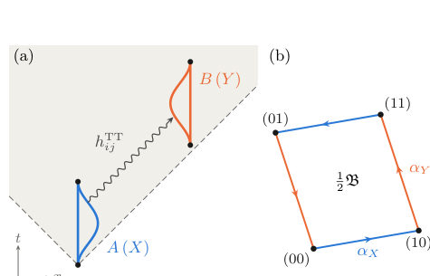
<figcaption class="paper-figure-caption"><b>Fig 1.</b> FIG. 1. (a) Two closed interferometers A and B with differ- ence sources X and Y ; B lies in the causal future of A, so on- shell gravitons (wavy line) connect them. (b) The four joint branches in graviton phase space. The witness (7) traverses the cycle (00) →(10) →(11) →(01) and equals twice the enclosed symplectic area, B = (X|GPJ|Y ) = 2 Im⟨αY , αX⟩; in every branchwise-definite model B = 0.</figcaption>
</figure>
<figure class="paper-figure-card">
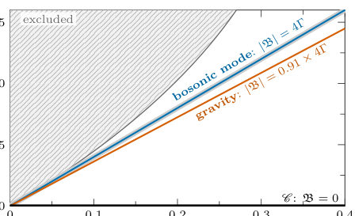
<figcaption class="paper-figure-caption"><b>Fig 2.</b> FIG. 2. Quantumness budget in the plane of which-path de- coherence Γ ≡√ΓXΓY and witness |B| (radians). Hatched: excluded by Eq. (11), drawn for VX = VY = e−Γ and VX±Y = VXVY ; the gray line |B| = 4Γ is its weak-coupling form, Eq. (12). Every branchwise-definite model C lies on the axis B = 0, whatever its decoherence. Quantum predictions saturate the budget at leading order: a ground-state bosonic mode kicked in orthogonal quadratures (trapped-ion analog) gives |B| = 2|αX||αY | = 4Γ exactly (blue), and the gravita- tional model (14) gives 0.91 × 4Γ for parallel axes at δ = 0.62 (vermilion; Γ ≲10−60 for proposed experiments, Sec. S5). Thermal or relic backgrounds and hybrid...</figcaption>
</figure>
</div>

<p><strong>Summary.</strong> This work proposes using the phase of a Bargmann invariant in matter-wave interferometers as a quantum gravity witness. The phase isolates a commutator term that is predicted to be non-zero by quantum theory but must vanish in any classical or semiclassical model. This offers a pathway to test quantum gravity effects using current or near-future interferometry techniques.</p>
<p><strong>Why it may be interesting.</strong> It provides a concrete, measurable, and theoretically robust observable ($B$) derived from fundamental quantum principles (commutators) to test quantum gravity effects using an interferometric platform, linking quantum field theory to experimental signatures.</p>
<details>
<summary>Detailed structure</summary>
<p><strong>Main problem.</strong> To identify a quantum gravity signature in matter-wave interferometry that cannot be explained by classical or branchwise-definite gravitational field models.</p>
<p><strong>Main result.</strong> The Bargmann invariant phase, which isolates the graviton commutator term, provides a quantum signature that must be non-zero if quantum gravity effects are present, as it vanishes in all classically simulable models.</p>
<p><strong>Method.</strong> The analysis uses the coherence factor of matter-wave interferometers coupled to linearized gravity, comparing the full quantum result against semiclassical approximations.</p>
<p><strong>Model / system.</strong> The system involves matter-wave interferometers with sources in spatial superposition, coupled linearly to linearized gravity. The evolution is analyzed via the matter coherence factor, which is decomposed into conservative, fluctuation, and commutator phases.</p>
<p><strong>Key observables.</strong> The Bargmann invariant phase $B = \arg(
ho_{00,10} 
ho_{10,11} 
ho_{11,01} 
ho_{01,00})$, and the quantumness budget $|\langle [U, V] 
angle|$.</p>
<p><strong>Important parameters / regimes.</strong> The commutator term $(X|GPJ|Y)$, which is independent of the graviton state and Newtonian interactions.</p>
<p><strong>Assumptions / limitations.</strong> The derivation assumes sources are additive and relies on the comparison between the full quantum evolution and models restricted to branchwise-definite dynamics.</p>
<p><strong>Figures summary.</strong> Figure 1 illustrates the witness $B$ traversing a cycle in graviton phase space, showing $B=0$ for all branchwise-definite models. Figure 2 plots the quantumness budget, showing the quantum prediction saturates the bound, while classical models lie on $B=0$.</p>
<p><strong>Paper structure.</strong> The paper develops the coherence factorization, derives the commutator term via the Bargmann invariant, establishes the quantumness budget inequality, and compares the quantum prediction against classical limits.</p>
</details>
<details>
<summary>Abstract</summary>
<p>We identify the phase of a Bargmann invariant of two matter-wave interferometers as a quantum gravity signature that cannot be reproduced by any branchwise-definite classical gravitational field. For matter coupled linearly to linearized gravity, the interferometric coherence factorizes exactly into a conservative Newtonian phase, the characteristic functional of the graviton state, and a commutator phase. For Wigner-positive graviton states, the first two are classically reproducible; therefore, decoherence alone cannot certify that gravity is quantized. The Bargmann phase isolates the commutator, which is independent of the graviton state and of all Newtonian interactions and is bounded by which-path decoherence. For gravity, this radiation-reaction effect is sixty orders of magnitude below experimental reach, but trapped-ion analogs can test it at order unity.</p>
</details>
<p><sub><a href="#top">↑ back to top</a></sub></p>

<p><a id="paper-2610.34919"></a></p>
<h3 id="heisenberg-scaling-quantum-metrology-of-electron-photon-coupling-via-multi-electron-pinem"><a href="http://arxiv.org/abs/2610.34919v1">Heisenberg-Scaling Quantum Metrology of Electron-Photon Coupling via Multi-Electron PINEM</a></h3>
<p><strong>Authors:</strong> Zihang Zou, Feng-Xiao Sun, Yunquan Liu, Qiongyi He<br>
<strong>Type:</strong> theory · <strong>Category:</strong> other · <strong>PDF:</strong> <a href="https://arxiv.org/pdf/2610.34919v1">https://arxiv.org/pdf/2610.34919v1</a><br>
<strong>Analysis basis:</strong> full PDF text, analyzed in chunks
<strong>Topic relevance:</strong> <code>quantum measurements</code> <strong>3/5</strong> · <code>Keldysh / 2PI / non-Gaussian methods</code> <strong>1/5</strong> · <code>Tavis-Cummings &amp; cavity-many-emitter</code> <strong>1/5</strong> · <code>analog quantum simulation</code> <strong>1/5</strong> · <code>interference shaping light</code> <strong>1/5</strong></p>
<div class="figure-strip-hint">↔ Scroll figures horizontally</div>
<div class="paper-figures-scroll">
<figure class="paper-figure-card">
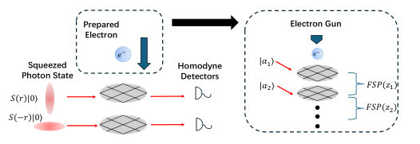
<figcaption class="paper-figure-caption"><b>Fig 1.</b> FIG. 1. Experimental apparatus for multi-electron PINEM metrology. A train of Ne electrons emitted from an electron gun is prepared in identical coherent comb states by cascaded interactions with classical light fields and free-space propaga- tion (FSP) with the method developed in Ref. [52]. The pre- pared electrons subsequently interact, through the PINEM coupling gs, with two orthogonally squeezed states, S(r)|0⟩ and S(−r)|0⟩. Homodyne detection is applied to the output modes therefore provides independent estimates the real and imaginary parts of the coupling strength gs.</figcaption>
</figure>
<figure class="paper-figure-card">
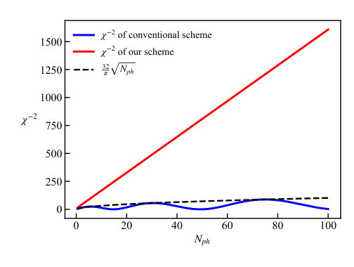
<figcaption class="paper-figure-caption"><b>Fig 2.</b> FIG. 2. Sensitivity scaling with photon number for the con- ventional and our schemes, compared in the single-electron regime with gs = 0.5. The sensitivity χ−2 of each scheme is plotted against the average photon number Nph for a conven- tional scheme determined by a coherent field of amplitude α (Nph = |α|2, blue) and for our scheme Nph determined by squeezing parameter r (Nph = sinh2 r, red). The sensitiv- ity of the conventional scheme is bounded by the envelope Env(χ−2) = 16 πgs p</figcaption>
</figure>
<figure class="paper-figure-card">
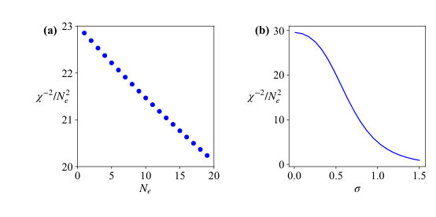
<figcaption class="paper-figure-caption"><b>Fig 3.</b> FIG. 3. Degradation of the normalized homodyne sensitivity χ−2/N 2 e induced by imperfect electron-state preparation, with the squeezing parameter of the optical mode fixed at r = 1.0. (a) Dependence on the electron number Ne at a fixed phase- distribution width σ = 0.5. (b) Dependence on σ at a fixed electron number Ne = 20. The accumulated phase fluctua- tions introduce a classical noise contribution that grows with Ne and with σ, destroying the ideal χ−2 ∝N 2 e scaling and reducing the metrological advantage.</figcaption>
</figure>
<figure class="paper-figure-card">
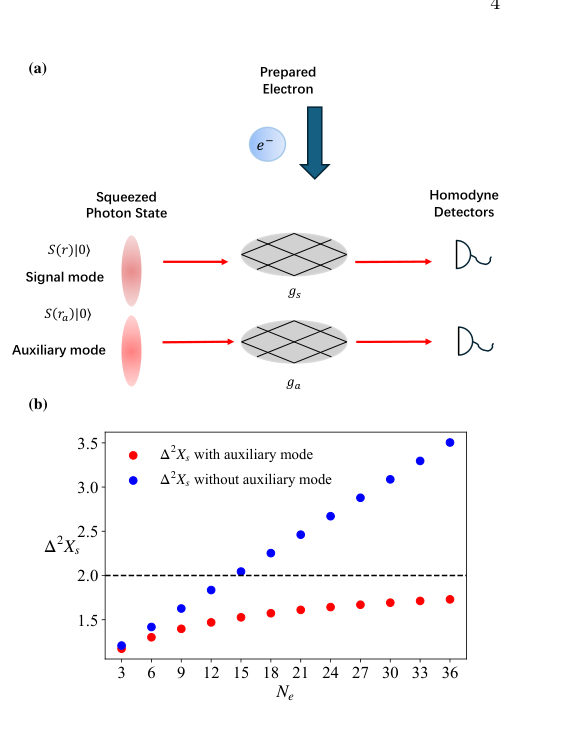
<figcaption class="paper-figure-caption"><b>Fig 4.</b> FIG. 4. Recovery of Heisenberg scaling using an auxiliary op- tical mode. (a) The experimental apparatus of the recovery scheme. For the case of estimating Re(gs), the prepared elec- trons interact with the signal and the auxiliary modes with initial state S(r) |0⟩and S(ra) |0⟩. Then homodyne detection is performed to the two modes respectively. (b) The com- parison of ∆2Xs between the schemes with and without the auxiliary mode, where ∆2 cos ϕ = 0.436, gs = ga = 0.2 and r = ra = 0. For the scheme without the auxiliary mode, the ∆2Xs increases linearly with the electron number. However, for the scheme with auxiliary mode, the ∆2Xs has an upper bound related to the squeezing parameter of the...</figcaption>
</figure>
</div>

<p><strong>Summary.</strong> The paper investigates quantum-enhanced metrology for measuring electron-photon coupling in multi-electron PINEM. It demonstrates that by utilizing squeezed light and an auxiliary measurement mode, the estimation precision can reach the Heisenberg limit scaling with electron number. This establishes multi-electron coherence as a key resource for high-precision nanoscale measurements.</p>
<p><strong>Why it may be interesting.</strong> This work directly addresses quantum metrology in a complex, open quantum system involving light-matter interaction at the nanoscale, providing concrete pathways to surpass the standard quantum limit using collective quantum resources.</p>
<details>
<summary>Detailed structure</summary>
<p><strong>Main problem.</strong> To determine the fundamental precision limit for estimating the electron-photon coupling strength in multi-electron near-field electron microscopy (PINEM) and achieve quantum-enhanced metrology.</p>
<p><strong>Main result.</strong> The scheme achieves Heisenberg scaling ($\propto N_e^2$) in the estimation precision, surpassing conventional sensing limits, and this scaling can be recovered even with imperfect electron preparation using an auxiliary optical mode.</p>
<p><strong>Method.</strong> The analysis uses the Quantum Fisher Information (QFI) derived from the system's unitary evolution operator, employing squeezed-light probing and homodyne detection in conjunction with conditional measurements.</p>
<p><strong>Model / system.</strong> The system involves multi-electron quantum optics interacting with an optical field via a PINEM interaction Hamiltonian. The platform utilizes an electron ensemble and incorporates concepts from quantum estimation theory.</p>
<p><strong>Key observables.</strong> Quantum Fisher Information (QFI), estimation sensitivity ($\chi^{-2}$), quadrature variance ($\Delta^2 X_s$), and the coupling strength $g_s$.</p>
<p><strong>Important parameters / regimes.</strong> Electron number ($N_e$), average photon number ($N_{ph}$), squeezing parameter ($r$), and the degree of inter-electron coherence.</p>
<p><strong>Assumptions / limitations.</strong> The analysis often assumes ideal comb states or utilizes Gaussian approximations for the electron phase distribution; the recovery mechanism relies on the auxiliary mode acting as a syndrome channel.</p>
<p><strong>Figures summary.</strong> Figures illustrate the experimental apparatus, compare the scaling of sensitivity ($\chi^{-2}$) for conventional versus proposed schemes against $N_{ph}$, and show the recovery of ideal scaling using an auxiliary mode.</p>
<p><strong>Paper structure.</strong> The paper progresses by first establishing the QFI limit for the multi-electron system, then proposing an experimentally accessible scheme using squeezed light, analyzing the degradation due to phase noise, and finally introducing an auxiliary mode and conditional measurements to recover the optimal Heisenberg scaling.</p>
</details>
<details>
<summary>Abstract</summary>
<p>Free-electron quantum optics has recently emerged as a promising platform for coherent electron-light interactions, yet its potential for quantum-enhanced metrology remains largely unexplored. Here, we investigate the fundamental precision limit of coupling-strength estimation in multi-electron photon-induced near-field electron microscopy (PINEM), demonstrating that the quantum Fisher information scales quadratically with electron number. We then propose an experimentally accessible scheme combining squeezed-light probing and optical homodyne detection that attains Heisenberg scaling with respect to electron number, provided the electrons exhibit nonzero inter-electron coherence, while surpassing conventional PINEM sensing in photon-number enhancement as well. We further analyze the effect of imperfect electron preparation, showing that electron phase noise is converted into a fluctuating optical displacement and eventually limits the precision. To overcome this limitation, an auxiliary optical mode coupled to the same electron ensemble measures the displacement noise in the signal mode, allowing its conditional suppression and recovery of the Heisenberg scaling. Our work establishes multi-electron coherence as a resource for free-electron quantum metrology and opens the route to precision measurements of nanoscale electron-light interactions.</p>
</details>
<p><sub><a href="#top">↑ back to top</a></sub></p>

<p><a id="paper-2610.34003"></a></p>
<h3 id="resource-optimal-screening-for-two-tier-quantum-system-characterization"><a href="http://arxiv.org/abs/2610.34003v1">Resource-Optimal Screening for Two-Tier Quantum System Characterization</a></h3>
<p><strong>Authors:</strong> Yi-Ting Chen, Aniket S. Dalvi, Nils Quetschlich<br>
<strong>Type:</strong> theory · <strong>Category:</strong> quantum information and computing · <strong>PDF:</strong> <a href="https://arxiv.org/pdf/2610.34003v1">https://arxiv.org/pdf/2610.34003v1</a><br>
<strong>Analysis basis:</strong> full PDF text, analyzed in chunks
<strong>Topic relevance:</strong> <code>quantum measurements</code> <strong>3/5</strong> · <code>QC/QI experiment</code> <strong>2/5</strong> · <code>methods for driven-dissipative</code> <strong>2/5</strong></p>
<div class="figure-strip-hint">↔ Scroll figures horizontally</div>
<div class="paper-figures-scroll">
<figure class="paper-figure-card">
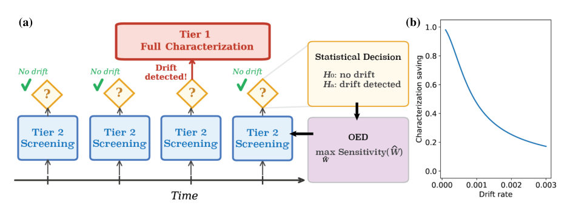
<figcaption class="paper-figure-caption"><b>Fig 1.</b> Fig. 1: Overview of the two-tier characterization strategy. (a) Two-tier screening architecture. A lightweight OED-optimized Tier-2 screening probe runs at every benchmarking interval. Only when statistically significant drift is detected does it trigger the expensive Tier-1 full characterization, with screening cost much lower than full characterization. (b) Saving η(σ) of the sense-and-characterize strategy relative to always-characterize, as a function of drift rate σ.</figcaption>
</figure>
<figure class="paper-figure-card">
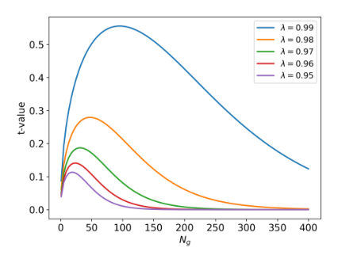
<figcaption class="paper-figure-caption"><b>Fig 2.</b> Fig. 2: Expected t-value of the screening probe (Eq. (8)) as a function of Clifford sequence length Ng, for base fidelities λ from 0.95 to 0.99. Peak positions match the closed-form optimum of Eq. (9). Parameters: Ns = 100 shots, Nc = 1 circuit, drift ∆λ = 10−3 (representative of daily drift on current hardware), SPAM fidelity a = 1 (to isolate the effect of λ), and depolarization floor c = 0.25 for the two-qubit case.</figcaption>
</figure>
<figure class="paper-figure-card">
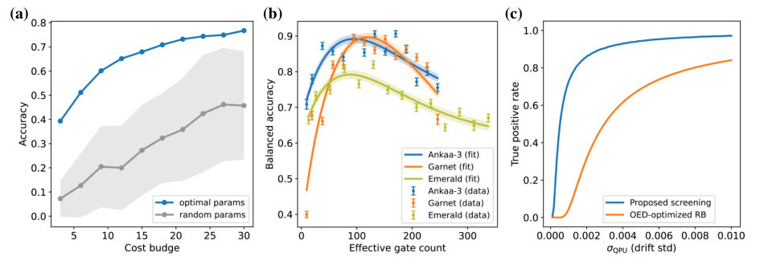
<figcaption class="paper-figure-caption"><b>Fig 3.</b> Fig. 3: Detection performance of the optimally designed screening probe. (a) Accuracy of the optimal parameters and random parameters in numerical simulation. The experiment assumes λQC = 0.98 and aQC = 0.99. The evaluation of the accuracy assumes the spec is a normal distribution with mean 0.98 and std 10−3. The critical value is tα = 2. The cost budget is set to both time and monetary cost. The gray area around the gray curve is the std over 40 sets of random parameters. (b) Balanced accuracy of the screening probe on QPUs as a function of effective gate count. Each data point is the average over 10 Clifford sequence experiments, each run with 2000 shots. (c) True positive detection rate...</figcaption>
</figure>
<figure class="paper-figure-card">
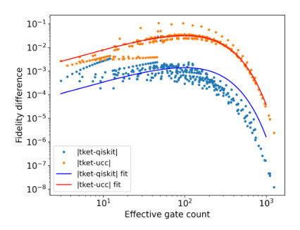
<figcaption class="paper-figure-caption"><b>Fig 4.</b> Fig. 4: Absolute fidelity difference between circuits compiled by different compilers as a function of effective gate count. Each data point is the numerically simulated fidelity difference of a single circuit. The solid line is the fit of Eq. (12).</figcaption>
</figure>
<figure class="paper-figure-card">
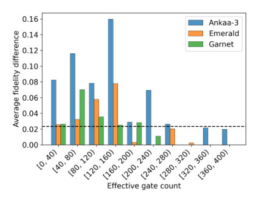
<figcaption class="paper-figure-caption"><b>Fig 5.</b> Fig. 5: Absolute Hellinger fidelity difference between Tket- compiled and Qiskit-compiled circuits from QPU experiments. The dashed line indicates twice the standard error estimated by noise simulation. The largest differences concentrate in the 40–160 effective gate range, validating the optimal circuit-size model.</figcaption>
</figure>
</div>

<p><strong>Summary.</strong> This paper proposes a resource-optimal, two-tier benchmarking strategy for monitoring hardware drift in QPUs. By using a lightweight screening probe that only triggers expensive full tests when necessary, it drastically reduces resource overhead compared to standard methods. The framework is theoretically general, providing concrete, hardware-independent guidelines for reliable quantum hardware characterization.</p>
<p><strong>Why it may be interesting.</strong> This work provides a rigorous, resource-aware framework for diagnosing hardware degradation in NISQ devices, which is crucial for any theoretical work involving open quantum systems or error characterization.</p>
<details>
<summary>Detailed structure</summary>
<p><strong>Main problem.</strong> Developing a resource-optimal method to characterize hardware drift in Quantum Processing Units (QPUs) without consuming excessive QPU time.</p>
<p><strong>Main result.</strong> The proposed two-tier screening strategy significantly outperforms standard benchmarking protocols, achieving a detection rate improvement of over 4x for gate-quality verification at the same resource cost.</p>
<p><strong>Method.</strong> The authors combine a risk-based, two-tier testing architecture with optimal experiment design (OED) principles to design lightweight screening probes.</p>
<p><strong>Model / system.</strong> The system is a QPU undergoing hardware drift, modeled using an exponential fidelity decay assumption. The framework is generalized using an Effective Gate Count (EGC) to make the analysis hardware-independent.</p>
<p><strong>Key observables.</strong> Detection rate, fidelity, success probability ($ar{Y}$), and the derived optimal circuit size.</p>
<p><strong>Important parameters / regimes.</strong> Drift rate ($\sigma$), detection threshold ($\delta$), and resource constraints (time/cost).</p>
<p><strong>Assumptions / limitations.</strong> The analysis assumes an exponential fidelity model for deriving closed-form optimal circuit sizes.</p>
<p><strong>Figures summary.</strong> Figure 1(a) illustrates the two-tier screening architecture (lightweight probe triggering full characterization), and Figure 1(b) shows the resource saving efficiency ($\eta$) versus the drift rate ($\sigma$).</p>
<p><strong>Paper structure.</strong> The paper introduces the two-tier architecture, derives the optimal probe design by maximizing Fisher information under resource constraints, and applies this framework to two specific applications: gate-quality verification and compiler benchmarking.</p>
</details>
<details>
<summary>Abstract</summary>
<p>Quantum processing units (QPUs) require frequent benchmarking to track hardware drift, yet standard protocols such as randomized benchmarking are resource-intensive and compete with application workloads for scarce QPU time. We present a resource-optimal screening strategy that combines a two-tier, risk-based testing architecture with optimal experiment design: a lightweight screening probe runs regularly and triggers expensive full characterization only when statistically significant change is detected, while the probe itself is designed to maximize detection sensitivity under explicit resource constraints. For an exponential fidelity model, we derive closed-form optimal circuit sizes and introduce an effective gate count that renders the analysis hardware-independent. We instantiate the strategy for two applications. For gate-quality verification, we show that optimally designed screening probes outperform randomized benchmarking with optimal experimental design (OED) by more than 4$\times$ in detection rate at equal resource cost. For compiler benchmarking, we formalize compiler comparison as a paired hypothesis test and derive the optimal circuit size for distinguishing compilation strategies. Despite their different observables and test statistics, both applications yield structurally the same closed-form expression for the optimal probe circuit size as a function of gate fidelity, illustrating the generality of the framework. Numerical and hardware experiments on QPUs (Rigetti Ankaa-3, IQM Garnet, IQM Emerald) confirm the theoretical predictions, with observed optimal circuit sizes matching the derived values across all devices.</p>
</details>
<p><sub><a href="#top">↑ back to top</a></sub></p>

<p><a id="paper-2610.34832"></a></p>
<h3 id="a-general-framework-for-leggett-garg-violation-in-neutrino-oscillations-and-matter-effects"><a href="http://arxiv.org/abs/2610.34832v1">A General Framework for Leggett--Garg Violation in Neutrino Oscillations and Matter Effects</a></h3>
<p><strong>Authors:</strong> M. M. Ettefaghi, H. Hajipour<br>
<strong>Type:</strong> theory · <strong>Category:</strong> other · <strong>PDF:</strong> <a href="https://arxiv.org/pdf/2610.34832v1">https://arxiv.org/pdf/2610.34832v1</a><br>
<strong>Analysis basis:</strong> full PDF text, analyzed in chunks
<strong>Topic relevance:</strong> <code>quantum measurements</code> <strong>3/5</strong> · <code>Keldysh / 2PI / non-Gaussian methods</code> <strong>2/5</strong> · <code>methods for driven-dissipative</code> <strong>1/5</strong></p>
<div class="figure-strip-hint">↔ Scroll figures horizontally</div>
<div class="paper-figures-scroll">
<figure class="paper-figure-card">
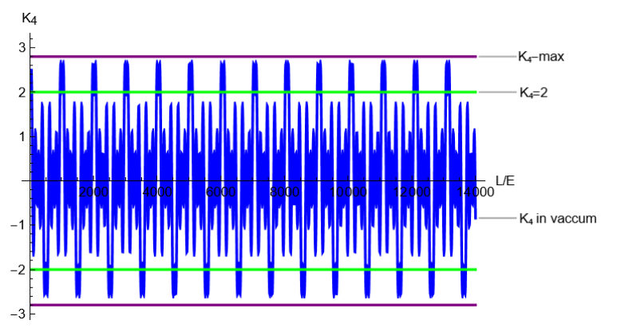
<figcaption class="paper-figure-caption"><b>Fig 1.</b> Figure 1: The LGI parameter K4 in vacuum (V = 0) as a function of the scaling variable L/E, for the baseline configuration given in Eq. (35). The curve is plotted for atmospheric neutrinos undergoing 2 →3 flavor transitions, with ∆m2 = 2.45 × 10−3 eV2 and θ = 49.02◦. The green horizontal lines mark the classical bounds K4 = ±2, while the purple horizontal lines mark the extrema of the quantum prediction, Kmax 4 = ±2.8; regions where the curve passes beyond the classical bounds indicate a violation of the LGI.</figcaption>
</figure>
<figure class="paper-figure-card">
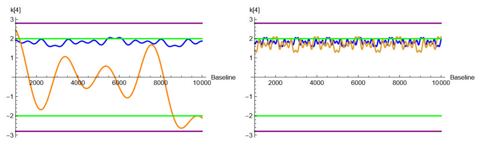
<figcaption class="paper-figure-caption"><b>Fig 2.</b> Figure 2: The LGI parameter K4 versus baseline length L for the solar-splitting parameter sector (top row) and the atmospheric-scale sector (bottom row), using the baseline pattern in Eq. (35). Blue denotes vacuum and orange denotes constant-density matter. The top- left panel uses the formal 1–2 terrestrial-matter resonance energy, 0.07 GeV, which is not accessible to solar-origin neutrinos; it is shown only to compare the parameter sector in the idealized model. The off-resonance panels show that the matter–vacuum difference is smaller for the selected parameters, although residual phase-dependent differences remain. Green lines mark the classical bounds K4 = ±2, and purple lines indicate...</figcaption>
</figure>
<figure class="paper-figure-card">
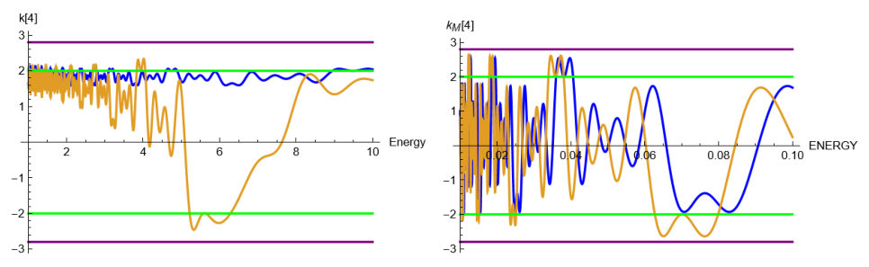
<figcaption class="paper-figure-caption"><b>Fig 3.</b> Figure 3: The LGI parameter K4 as a function of neutrino energy E at fixed baseline lengths, for the baseline configuration given in Eq. (35). (Left panel) Atmospheric neutrinos with L = 9580 km. (Right panel) Solar neutrinos with L = 1258 km. In both panels, the blue curve shows the vacuum result (V = 0), the other curve shows the matter result (V ̸= 0), and the vertical dashed line marks the corresponding resonance energy. The green horizontal lines mark the classical bounds K4 = ±2, while the purple horizontal lines mark the extrema of the quantum prediction, Kmax 4 = ±2.8.</figcaption>
</figure>
</div>

<p><strong>Summary.</strong> This theoretical work examines whether neutrino oscillations violate the Leggett-Garg inequality, a test of macrorealism. By using the pseudo-density matrix formalism, the authors show that matter effects significantly alter these temporal quantum correlations, especially near the MSW resonance. This suggests that future long-baseline neutrino experiments could potentially probe fundamental quantum principles using matter interactions.</p>
<p><strong>Why it may be interesting.</strong> The application of quantum foundations concepts (LGI violation) to particle physics phenomenology (neutrino oscillations) provides a novel theoretical link between quantum foundations and high-energy astrophysics, relevant for understanding coherence in complex quantum systems.</p>
<details>
<summary>Detailed structure</summary>
<p><strong>Main problem.</strong> The paper investigates the violation of the Leggett-Garg inequality (LGI) in the context of neutrino oscillations to test fundamental assumptions like macrorealism and noninvasive measurability.</p>
<p><strong>Main result.</strong> Matter effects, particularly near the MSW resonance, are shown to modify temporal quantum correlations, providing a mechanism to potentially amplify LGI violation in neutrino experiments.</p>
<p><strong>Method.</strong> The authors employ the pseudo-density matrix (PDM) formalism to calculate the four-time LGI parameter ($K_4$) for two-flavor neutrino oscillations.</p>
<p><strong>Model / system.</strong> The system is two-flavor neutrino oscillations, modeled using the PDM formalism which allows for the study of temporal correlations without assuming noninvasive measurement. The Hamiltonian incorporates vacuum and constant-density matter potential terms.</p>
<p><strong>Key observables.</strong> The primary observable is the four-time LGI parameter, $K_4$, which is compared against the classical bound of $\pm 2$.</p>
<p><strong>Important parameters / regimes.</strong> Key parameters include the neutrino energy ($E$), baseline lengths ($L$), and the matter potential ($V_e$), with special attention paid to the MSW resonance region.</p>
<p><strong>Assumptions / limitations.</strong> The analysis relies on the stationarity assumption for constructing temporal correlators and uses a constant-density approximation for matter effects, which is a simplification of realistic Earth propagation.</p>
<p><strong>Figures summary.</strong> Figures illustrate $K_4$ dependence on $L/E$ in vacuum, comparing results to classical bounds, and show marked departures between vacuum and matter predictions near the MSW resonance.</p>
<p><strong>Paper structure.</strong> The paper develops the formalism using the PDM for temporal correlations, calculates the specific $K_4$ parameter, and then numerically evaluates this quantity for both vacuum and matter scenarios, highlighting the resonance enhancement.</p>
</details>
<details>
<summary>Abstract</summary>
<p>The Leggett--Garg inequality (LGI) constrains temporal correlations under the assumptions of macrorealism and noninvasive measurability. We study the four-time quantity \(K_4\) for two-flavor neutrino oscillations using a pseudo-density matrix (PDM) under static conditions, instead of non-invasive measurement. With this approach, it becomes possible to examine a Horodecki-type criterion for the temporal Pauli-correlation tensor. The Horodecki criterion had been proven for CHSH inequality (R. Horodecki et al. Phys. Lett. \textbf{A200}, 340), For any unitary qubit evolution, the corresponding scalar is \(M_R=2\). Although, this result characterizes the correlation tensor and the optimized temporal construction, it does not imply that a fixed flavor observable violates the LGI at every neutrino energy or baseline. We therefore evaluate \(K_4\) explicitly for flavor measurements in matter of constant density. The numerical examples illustrate how matter effects modify the temporal correlations, with a pronounced matter--vacuum separation near the MSW resonance for the chosen parameters and generally smaller differences in the selected off-resonance cases. This finding motivates further investigation of matter-induced temporal correlations in atmospheric neutrinos and their potential relevance to future studies with long-baseline and atmospheric-neutrino experiments, including DUNE and Hyper-Kamiokande.</p>
</details>
<p><sub><a href="#top">↑ back to top</a></sub></p>

<p><a id="paper-2610.33632"></a></p>
<h3 id="path-distinguishability-gaps-at-fixed-visibility-in-noisy-qubit-interferometers"><a href="http://arxiv.org/abs/2610.33632v1">Path-Distinguishability Gaps at Fixed Visibility in Noisy Qubit Interferometers</a></h3>
<p><strong>Authors:</strong> Mohd Asad Siddiqui<br>
<strong>Type:</strong> theory · <strong>Category:</strong> quantum information and computing · <strong>PDF:</strong> <a href="https://arxiv.org/pdf/2610.33632v1">https://arxiv.org/pdf/2610.33632v1</a><br>
<strong>Analysis basis:</strong> full PDF text, analyzed in chunks
<strong>Topic relevance:</strong> <code>interference shaping light</code> <strong>3/5</strong> · <code>quantum measurements</code> <strong>3/5</strong></p>
<div class="figure-strip-hint">↔ Scroll figures horizontally</div>
<div class="paper-figures-scroll">
<figure class="paper-figure-card">
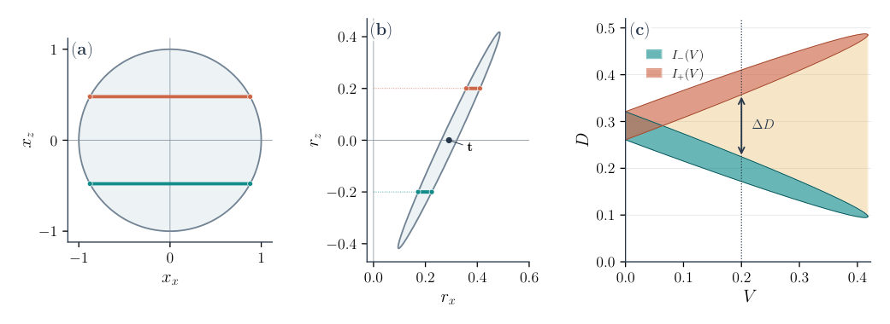
<figcaption class="paper-figure-caption"><b>Fig 1.</b> FIG. 1. Geometry of a distinguishability gap at fixed visibility for the channel in Eq. (36), with a balanced pure quanton state, a relative π rotation of the marker about z, and Ψ = id. (a) The xy = 0 input cross section. At V = 0.2, the planes xz = ±V/b0 intersect the Bloch ball in two disks; the colored segments show their intersections with the plotted plane. (b) The corresponding prepared-marker sections in the ry = 0 plane lie at rz = ±0.2. The complete output disks are used to determine the distinguishability intervals. (c) Exact attainable bands I−(V ) and I+(V ), with the inaccessible interval shaded amber wherever the bands are separated. At the dotted slice, the gap width is ∆D...</figcaption>
</figure>
<figure class="paper-figure-card">
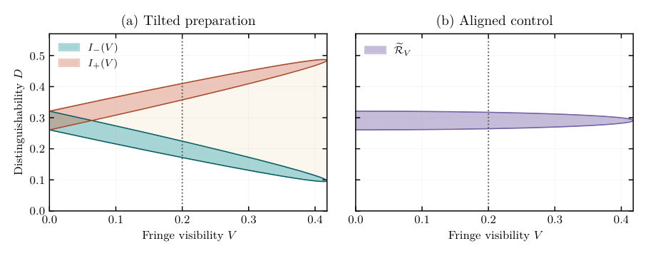
<figcaption class="paper-figure-caption"><b>Fig 2.</b> FIG. 2. Fixed-visibility distinguishability sections for two preparation channels with identical displacement t = 0.291 ex and visibility V = 0.418|xz|. (a) The tilted-channel bands from Fig. 1(c) are shown again to permit a direct comparison with the control channel; the inaccessible region is shaded amber. (b) Removing the axial–transverse coupling while retaining the same displacement makes the two signed intervals coincide. Both channels are CPTP. Dotted lines indicate V = 0.2.</figcaption>
</figure>
<figure class="paper-figure-card">
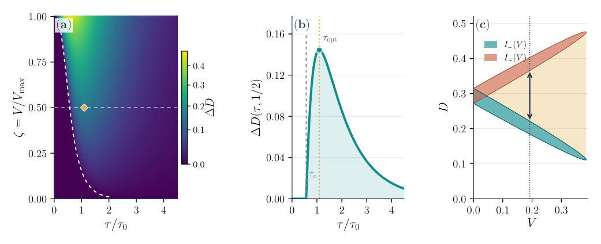
<figcaption class="paper-figure-caption"><b>Fig 3.</b> FIG. 3. Gap formation under the time-independent Lindblad evolution with parameters in Eq. (52). (a) Exact gap width ∆D(τ, ζ), where ζ = V/Vmax(τ). The white dashed curve marks the gap-formation threshold, the horizontal line denotes ζ = 1/2, and the diamond indicates the optimal duration along that slice. (b) Gap width at fixed fractional visibility ζ = 1/2, with the threshold at τc/τ0 ≃0.568 and a maximum ∆D ≃0.1444 at τopt/τ0 ≃1.096. (c) Complete attainable region at the optimal duration, with the gap at V ≃0.1922 indicated. The optimization is performed at fixed fractional rather than fixed absolute visibility.</figcaption>
</figure>
<figure class="paper-figure-card">
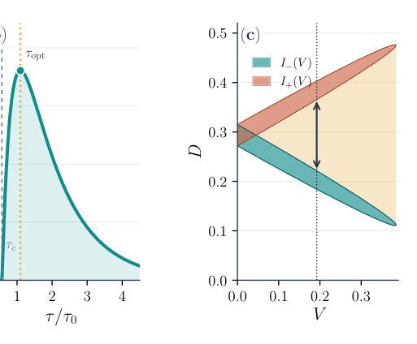
<figcaption class="paper-figure-caption"><b>Fig 4.</b> Figure 3 shows the gap-formation boundary, the ζ = 1/2 slice, and the attainable region at the optimal duration. Other fractional-visibility slices are treated in Supplemen- tal Sec. SV B. If both τ and 0 ≤ζ ≤1 are optimized, the largest separation for these parameters is 0.47392250 . . . at τ/τ0 = 0.52814607 . . . and ζ = 1. At that boundary each input disk collapses to a point: this is a maximum separation of two attainable values, not a gap between positive-width bands (Supplemental Sec. SV C).</figcaption>
</figure>
</div>

<p><strong>Summary.</strong> This theoretical paper investigates the relationship between path distinguishability and visibility in noisy qubit interferometers. It demonstrates that even when the standard duality inequality is satisfied, fixing the visibility can result in a gap in the measurable distinguishability values. This gap is a signature of the measurement process losing phase information and requires specific non-unital noise channels to manifest.</p>
<p><strong>Why it may be interesting.</strong> This work provides a deep, quantitative understanding of fundamental quantum limits in interferometry, showing that phase-insensitive measurements (like standard visibility) can mask underlying physical constraints, leading to non-trivial gaps in measurable quantities.</p>
<details>
<summary>Detailed structure</summary>
<p><strong>Main problem.</strong> The paper characterizes the complete attainable region for path distinguishability ($D$) at a fixed fringe visibility ($V$) in noisy two-path quantum interferometers, specifically investigating the existence of 'gaps' in the attainable $D$ values.</p>
<p><strong>Main result.</strong> At fixed visibility, the optimal distinguishabilities can form at most two separated closed intervals, creating a gap; this gap requires non-unital marker preparation for balanced source conditions.</p>
<p><strong>Method.</strong> The analysis uses Bloch sphere representations and geometric constraints derived from the Helstrom measurement theory to map the relationship between $V$ and $D$ as the marker input state is varied.</p>
<p><strong>Model / system.</strong> The system is a two-path quantum interferometer involving a path-dependent quantum system ($Q$) and a qubit marker ($M$). The dynamics are governed by fixed source preparation, path-dependent interactions, and subsequent local noise channels.</p>
<p><strong>Key observables.</strong> Visibility ($V$), Path Distinguishability ($D$), and the complex fringe amplitude ($\Gamma$).</p>
<p><strong>Important parameters / regimes.</strong> Fixed fractional visibility ($\zeta$), preparation geometry ($\mathbf{r}$), and the nature of the marker preparation channel ($\Phi$).</p>
<p><strong>Assumptions / limitations.</strong> The analysis fixes the source, preparation channel, interaction, and subsequent local channels while varying the marker input state. The gap is a property of the fixed-visibility slice, not the entire region.</p>
<p><strong>Figures summary.</strong> Figure 1 illustrates the geometry of the distinguishability gap, showing the intersection of planes with the Bloch ball, and the resulting two separated attainable bands $I_-(V)$ and $I_+(V)$ with the inaccessible gap shaded amber.</p>
<p><strong>Paper structure.</strong> The paper first establishes the physical model and observables, then derives the geometric constraints for the attainable region $R(V, D)$. It proves that fixing $V$ can lead to disconnected $D$ intervals (the gap), contrasting this with the connected interval obtained by fixing the complex amplitude $\Gamma$. Finally, it provides explicit criteria for the gap's existence.</p>
</details>
<details>
<summary>Abstract</summary>
<p>The wave--particle duality relation bounds visibility and path distinguishability but does not determine their attainable values in a fixed noisy interferometer. We characterize the complete attainable region for a two-path interferometer with a qubit marker, varying the marker input while fixing the source, preparation channel, path-dependent interaction, and subsequent marker channel. At each feasible fringe visibility, the Helstrom-optimal distinguishabilities form at most two closed intervals, which can be separated by a gap. The intervals arise from opposite axial marker polarizations with the same fringe-amplitude modulus. Fixing the complex fringe amplitude instead gives a connected interval; for balanced original-path discrimination, a gap requires nonunital marker preparation. For a balanced pure source, relative $π$ rotations, and no subsequent marker noise, we obtain a necessary and sufficient geometric criterion for a gap under some rotation axis perpendicular to the preparation displacement. Explicit channels and a time-independent Lindblad realization show how the gap depends on preparation geometry and evolution, with exact onset and optimization formulas at fixed fractional visibility. We also give sufficient bounds for excluding distinguishability intervals under calibrated finite-resolution errors.</p>
</details>
<p><sub><a href="#top">↑ back to top</a></sub></p>

<p><a id="paper-2610.35660"></a></p>
<h3 id="quantum-computation-of-energy-level-degeneracy-and-thermodynamical-properties-of-spin-systems"><a href="http://arxiv.org/abs/2610.35660v1">Quantum computation of energy level degeneracy and thermodynamical properties of spin systems</a></h3>
<p><strong>Authors:</strong> V. M. Tkachuk, M. I. Samar<br>
<strong>Type:</strong> both · <strong>Category:</strong> statistical mechanics · <strong>PDF:</strong> <a href="https://arxiv.org/pdf/2610.35660v1">https://arxiv.org/pdf/2610.35660v1</a><br>
<strong>Analysis basis:</strong> full PDF text, analyzed in chunks
<strong>Topic relevance:</strong> <code>analog quantum simulation</code> <strong>3/5</strong> · <code>quantum measurements</code> <strong>3/5</strong></p>
<div class="figure-strip-hint">↔ Scroll figures horizontally</div>
<div class="paper-figures-scroll">
<figure class="paper-figure-card">
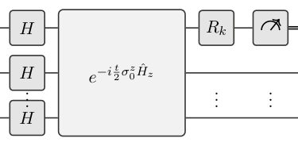
<figcaption class="paper-figure-caption"><b>Fig 1.</b> Figure 1: Quantum circuit implementing the single-ancilla interferometric protocol for extract- ing the normalized complex partition function Z(it)/2N.</figcaption>
</figure>
<figure class="paper-figure-card">
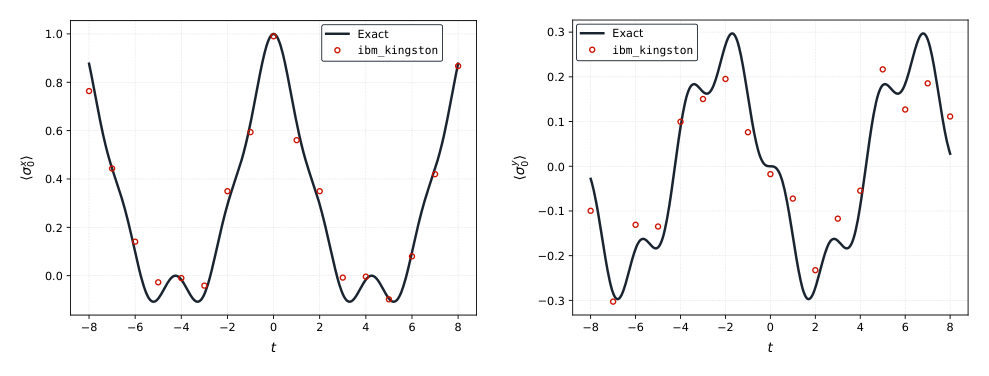
<figcaption class="paper-figure-caption"><b>Fig 2.</b> Figure 3: Ancilla expectation values as functions of evolution time. Exact results are compared with experimental data from ibm kingston.</figcaption>
</figure>
<figure class="paper-figure-card">
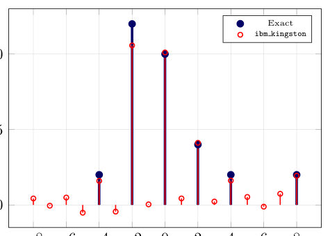
<figcaption class="paper-figure-caption"><b>Fig 3.</b> Figure 4: Energy-level degeneracies of the five-spin open-envelope model. (a) Raw Fourier reconstruction from ibm kingston compared with the exact spectrum. (b) Retained coefficients after removing |graw| &lt; 1, their normalized values gnorm, constrained degeneracies gconstr, and exact values.</figcaption>
</figure>
<figure class="paper-figure-card">
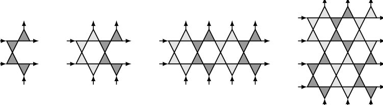
<figcaption class="paper-figure-caption"><b>Fig 4.</b> Figure 5: Finite Kagome clusters with N = 6, 12, 24, and 36 spins, constructed from six-site building blocks. Periodic boundary conditions are implemented by identifying the boundary vertices indicated by the arrows. The cluster dimensions Lx × Ly are given in units of the six-site block.</figcaption>
</figure>
<figure class="paper-figure-card">
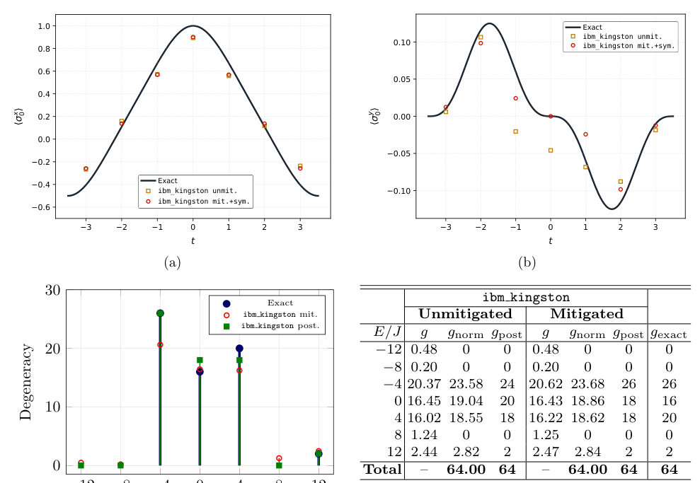
<figcaption class="paper-figure-caption"><b>Fig 5.</b> Figure 6: Results for the six-spin Kagome cluster. (a) Ancilla expectation value ⟨σx 0⟩and (b) ⟨σy 0⟩obtained from unmitigated and readout-mitigated, symmetrized ibm kingston data, together with the exact results. (c) Degeneracy spectrum reconstructed from the mitigated data, compared with the post-processed and exact spectra. (d) Reconstructed degeneracies obtained from the unmitigated and mitigated data. The normalized values gnorm are obtained by applying the 3σ statistical threshold and rescaling the remaining spectral contributions to satisfy P</figcaption>
</figure>
</div>

<p><strong>Summary.</strong> This work proposes a hybrid quantum-classical method to determine the energy spectrum and thermodynamic properties of spin systems by measuring the partition function using a single ancilla qubit. The technique leverages the inverse DFT to reconstruct degeneracies, showing that while hardware noise limits perfect spectral reconstruction, the overall thermodynamic behavior remains reliably measurable. This provides a pathway to simulate complex quantum materials on near-term quantum hardware.</p>
<p><strong>Why it may be interesting.</strong> It demonstrates a powerful quantum measurement technique to probe bulk thermodynamic properties of interacting quantum many-body systems, which is a core problem in condensed matter theory.</p>
<details>
<summary>Detailed structure</summary>
<p><strong>Main problem.</strong> The paper aims to reconstruct the energy-level degeneracies and calculate the thermodynamic properties of complex spin systems.</p>
<p><strong>Main result.</strong> The hybrid quantum-classical method successfully recovers the overall temperature dependence of thermodynamic quantities like heat capacity, even when hardware noise limits the exact reconstruction of individual energy degeneracies.</p>
<p><strong>Method.</strong> It uses a single ancilla qubit to measure the complex partition function $Z(it)$ at imaginary inverse temperatures, followed by an inverse Discrete Fourier Transform (DFT) to estimate the spectral weights.</p>
<p><strong>Model / system.</strong> The study focuses on spin systems governed by an Ising-type Hamiltonian, benchmarked on frustrated antiferromagnets on periodic Kagome graphs (up to 36 spins).</p>
<p><strong>Key observables.</strong> Partition function $Z(eta)$, energy-level degeneracies ($g_k$), and heat capacity $C(eta)$.</p>
<p><strong>Important parameters / regimes.</strong> Imaginary inverse temperature ($eta = it$), system size ($N=36$), and the spectral spacing ($\Delta E$).</p>
<p><strong>Assumptions / limitations.</strong> The DFT reconstruction is exact only in the absence of noise, and the results rely on post-processing steps like thresholding and renormalization to enforce physical constraints.</p>
<p><strong>Figures summary.</strong> Figures compare ancilla expectation values, reconstructed spectral weights, and calculated heat capacities against exact theoretical results for small and large Kagome clusters.</p>
<p><strong>Paper structure.</strong> The paper progresses from defining the thermodynamic link to the partition function, detailing the quantum protocol using the ancilla qubit, and finally applying the DFT reconstruction technique to calculate thermodynamic observables for increasingly large spin systems.</p>
</details>
<details>
<summary>Abstract</summary>
<p>We propose a hybrid quantum-classical method for reconstructing energy-level degeneracies and thermodynamic properties of spin systems. A single ancilla qubit is used to measure the partition function at imaginary inverse temperatures. For spectra lying on a known equally spaced energy grid, the inverse discrete Fourier transform allows exact reconstruction of degeneracies in the absence of noise, without spectral leakage. The quantum circuits are optimized using commuting interactions and Eulerian ordering. We demonstrate the method for frustrated Ising antiferromagnets on periodic Kagome graphs with up to 36 spins, using the ibm_kingston quantum processor. Despite substantial circuit depth and hardware noise, the reconstructed spectra retain their dominant features, and the calculated heat capacities reproduce the main temperature dependence of the exact results.   Keywords: partition function, imaginary temperature, Ising model, heat capacity, ancilla qubit, quantum computing.</p>
</details>
<p><sub><a href="#top">↑ back to top</a></sub></p>

<p><a id="paper-2610.34055"></a></p>
<h3 id="quantum-neuroplastic-learning-for-time-series-processing"><a href="http://arxiv.org/abs/2610.34055v1">Quantum neuroplastic learning for time-series processing</a></h3>
<p><strong>Authors:</strong> Mostafizur Rahaman Laskar<br>
<strong>Type:</strong> both · <strong>Category:</strong> disordered systems and neural networks · <strong>PDF:</strong> <a href="https://arxiv.org/pdf/2610.34055v1">https://arxiv.org/pdf/2610.34055v1</a><br>
<strong>Analysis basis:</strong> full PDF text, analyzed in chunks
<strong>Topic relevance:</strong> <code>QC/QI experiment</code> <strong>3/5</strong> · <code>analog quantum simulation</code> <strong>1/5</strong> · <code>methods for driven-dissipative</code> <strong>1/5</strong> · <code>quantum measurements</code> <strong>1/5</strong></p>
<div class="figure-strip-hint">↔ Scroll figures horizontally</div>
<div class="paper-figures-scroll">
<figure class="paper-figure-card">
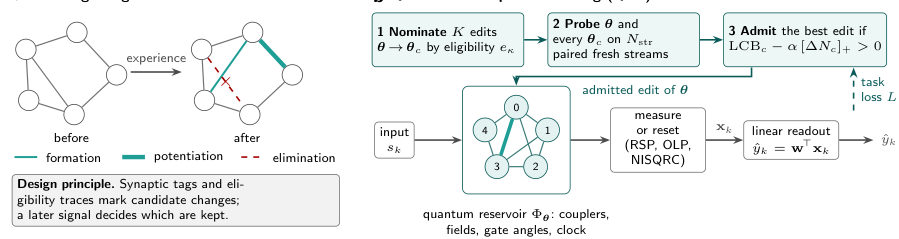
<figcaption class="paper-figure-caption"><b>Fig 1.</b> Fig. 1 Quantum neuroplastic learning. a, Experience forms, strengthens and eliminates connections in neural circuits; synaptic tags and eligibility traces mark candidate changes, and later signals decide which are consolidated. b, QNL applies this principle to the physical configuration θ of a quantum reservoir. In each block, K local edits (adding, removing or reweighting a coupler, or changing a local field, gate angle or evolution time) are nominated with probabilities set by eligibility traces, and the current and candidate configurations are evaluated on the same Nstr fresh input streams. The best edit is admitted when a nominal lower confidence bound (LCB) on its paired loss reduction...</figcaption>
</figure>
<figure class="paper-figure-card">
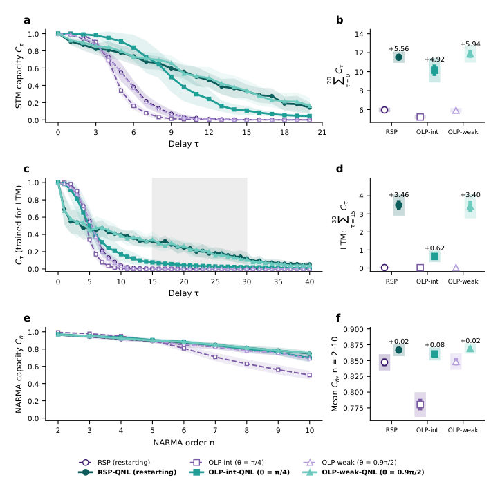
<figcaption class="paper-figure-caption"><b>Fig 2.</b> Fig. 2 Plastic reorganization of monitored erase-and-write reservoirs. Five-qubit reservoirs with the restarting protocol (RSP) and online protocols with intermediate (OLP-int, θ = π/4) and weak (OLP-weak, θ = 0.9π/2) dephasing monitoring, before (purple, dashed, open symbols) and after QNL (teal, solid, filled symbols). Separate learning runs from the same base reservoir optimize short-term memory (STM; τ = 0–20), long-term memory (LTM; τ = 15–30) and NARMA processing (n = 2–10). a,b, STM capacity Cτ and summed STM capacity. c,d, Capacity profile of the reservoirs trained for LTM (grey band, objective) and LTM capacity P30 τ=15 Cτ. e,f, NARMA capacity Cn and its mean over n = 2–10....</figcaption>
</figure>
<figure class="paper-figure-card">
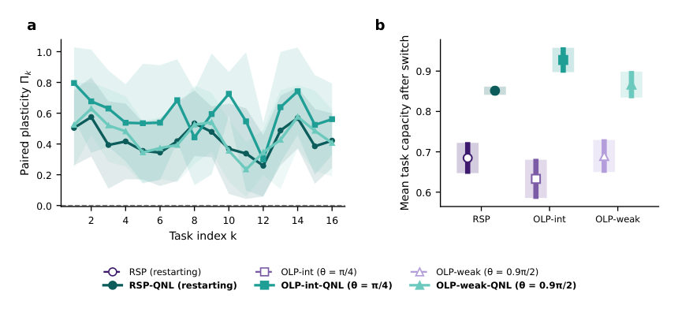
<figcaption class="paper-figure-caption"><b>Fig 3.</b> Fig. 3 Adaptation continues across task switches. Sequences of 16 tasks drawn from four STM windows and three NARMA orders without immediate repetition; after each switch, QNL continues from the configuration reached on the previous task. a, Paired plasticity Πk (Supplementary Eq. (S5)); the dashed line (Πk = 0) corresponds to a fixed reservoir. Lines and bands, mean ± s.d. over n = 6 sequences. b, Capacity after the switch, 1 −L, averaged over the 16 tasks of each sequence, for fixed reservoirs (purple) and QNL (teal). Boxes, mean ± s.d.; bars, 95% Student-t confidence interval.</figcaption>
</figure>
<figure class="paper-figure-card">
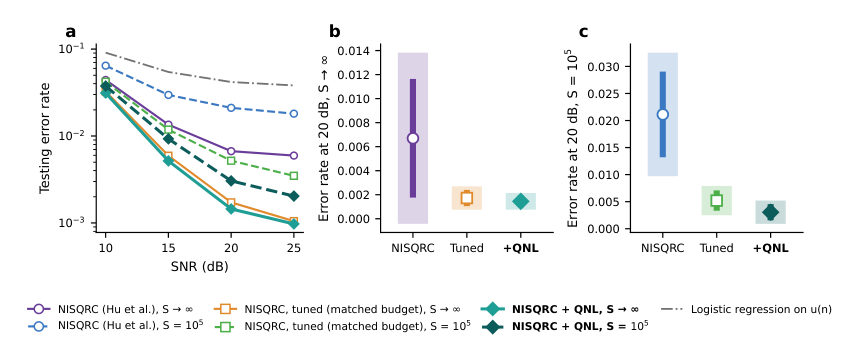
<figcaption class="paper-figure-caption"><b>Fig 4.</b> Fig. 4 QNL on top of NISQRC (Hamiltonian ansatz). Channel equalization with the (2 + 4)-qubit NISQRC of ref. [49]: random instances from the authors’ parameter distribution (NISQRC; labelled ‘Hu et al.’ in the legend), the same distribution tuned by random search with the same number of candidates (tuned), and NISQRC after QNL (+QNL). Both learning methods use S = 105-shot features at 20 dB. a, Testing error rate versus signal-to-noise ratio for exact probabilities (S →∞, solid) and S = 105 (dashed); dash-dotted, logistic regression on the received signal u(n). b,c, Error rate at 20 dB for S →∞and S = 105. Boxes, mean ± s.d. over n = 8 realizations; bars, approximate 95% confidence interval.</figcaption>
</figure>
<figure class="paper-figure-card">
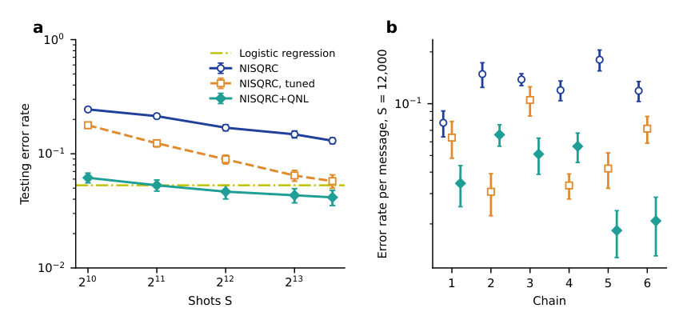
<figcaption class="paper-figure-caption"><b>Fig 5.</b> Fig. 5 Frozen configurations on an IBM superconducting processor. Channel equalization at 20 dB (100 messages of 20 symbols) on ibm fez for the circuit-ansatz NISQRC instance of ref. [49] (NISQRC), the same ansatz tuned by random search with 160 candidates (NISQRC, tuned) and the QNL configuration (NISQRC+QNL), all fixed in the same noise- aware simulator before execution. Each circuit runs six disjoint seven-qubit chains, and the method-to-chain assignment rotates between circuits so that every method uses every chain for 16–17 messages. a, Testing error rate versus shots per circuit S; error bars, s.d. over 20 random train/test partitions; dash-dotted, logistic regression on u(n). b,...</figcaption>
</figure>
</div>

<p><strong>Summary.</strong> This paper introduces Quantum Neuroplastic Learning (QNL), a method that allows the physical structure of a quantum reservoir to adapt its couplings during training, mimicking biological synaptic plasticity. By implementing this structural learning, QNL significantly boosts the memory capacity and performance of quantum machine learning models. The results demonstrate superior error rate reductions on superconducting quantum hardware compared to fixed-parameter approaches.</p>
<p><strong>Why it may be interesting.</strong> The integration of structural plasticity concepts, borrowed from neuroscience, into quantum machine learning models provides a powerful, biologically inspired mechanism for improving quantum computation robustness and adaptability.</p>
<details>
<summary>Detailed structure</summary>
<p><strong>Main problem.</strong> The paper addresses the need for a learning principle in quantum reservoir computing (QRC) that allows the physical structure of the quantum reservoir to adapt dynamically, mimicking biological neuroplasticity.</p>
<p><strong>Main result.</strong> Quantum Neuroplastic Learning (QNL) significantly enhances the memory capacity and long-term recall of the reservoir, achieving substantial error rate reductions (e.g., 9.7% to 2.2% in channel equalization) on real quantum hardware compared to fixed configurations.</p>
<p><strong>Method.</strong> QNL proposes reorganizing the reservoir couplings ($    heta$) using local, discrete edits guided by eligibility traces, admitting an edit only if its predicted loss reduction exceeds a complexity cost.</p>
<p><strong>Model / system.</strong> The system is a quantum reservoir computer, modeled using superconducting qubits (e.g., on the ibm fez processor) governed by various Hamiltonians (e.g., transverse-field Ising or circuit ansatz). The process involves training the reservoir structure ($   heta$) alongside the classical readout weights ($w$).</p>
<p><strong>Key observables.</strong> Memory capacity ($C_	au$), symbol error rate (SER) for channel equalization, and Test Root-Mean-Square Error (RMSE) for time-series forecasting.</p>
<p><strong>Important parameters / regimes.</strong> Complexity cost ($\alpha$), measurement budget ($N_{shots}$), Signal-to-Noise Ratio (SNR), and the specific quantum hardware platform (ibm fez).</p>
<p><strong>Assumptions / limitations.</strong> The readout weights ($w$) are refitted for every evaluated configuration, and the cost is paid in additional evaluations during the learning process.</p>
<p><strong>Figures summary.</strong> Figures illustrate the biological analogy of plasticity (synaptic tags) and its mapping to the physical configuration updates ($   heta$) in QNL. Other figures compare capacity and error rates across different learning protocols and hardware platforms.</p>
<p><strong>Paper structure.</strong> The paper introduces QNL as a structural plasticity mechanism for QRC, details the update rules using eligibility traces, and then evaluates this method across multiple tasks (memory, forecasting, equalization) using both simulation and actual superconducting quantum hardware.</p>
</details>
<details>
<summary>Abstract</summary>
<p>Quantum machine learning uses quantum states and dynamics to represent and process data. In quantum reservoir computing, the physical system is typically fixed and a classical readout is trained. Inspired by the formation, strengthening and pruning of synapses during biological learning, we propose quantum neuroplastic learning (QNL), which reorganizes the couplings among the qubits of a quantum reservoir, much as experience rewires connections among neurons. Eligibility traces guide local edits to couplings, fields, gate angles and evolution time, and an edit is retained when a statistical bound on its improvement exceeds a complexity cost. We evaluate QNL under restarting and online monitored protocols on short- and long-term memory, nonlinear autoregressive processing and forecasting, and channel equalization tasks. In simulation, QNL enhances memory capacity, develops long-term recall and sustains adaptation across multiple tasks, with the largest benefit for tasks that require extended memory. On the IBM superconducting processor \texttt{ibm_fez}, with six seven-qubit reservoirs running in parallel on 42 qubits (1.28 million shots in total), configurations learned in simulation and frozen before execution reduced the channel-equalization symbol error rate from 9.7\% to 2.2\% and achieved a lower error rate than a matched-budget tuned baseline.</p>
</details>
<p><sub><a href="#top">↑ back to top</a></sub></p>

<p><a id="paper-2610.33220"></a></p>
<h3 id="quantum-relativistic-anomalous-proper-time"><a href="http://arxiv.org/abs/2610.33220v1">Quantum-Relativistic Anomalous Proper Time</a></h3>
<p><strong>Authors:</strong> Pablo L. Saldanha, Nelson Yokomizo<br>
<strong>Type:</strong> both · <strong>Category:</strong> other · <strong>PDF:</strong> <a href="https://arxiv.org/pdf/2610.33220v1">https://arxiv.org/pdf/2610.33220v1</a><br>
<strong>Analysis basis:</strong> full PDF text, analyzed in chunks
<strong>Topic relevance:</strong> <code>interference shaping light</code> <strong>3/5</strong> · <code>quantum measurements</code> <strong>3/5</strong></p>
<div class="figure-strip-hint">↔ Scroll figures horizontally</div>
<div class="paper-figures-scroll">
<figure class="paper-figure-card">
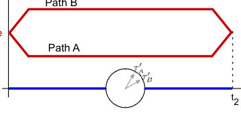
<figcaption class="paper-figure-caption"><b>Fig 1.</b> FIG. 1. Scheme to obtain an anomalous proper time for the probe quantum system. A source massive quantum particle has two possible paths in a 1D Mach-Zehnder interferome- ter. If the source mass propagates along path A, closer to the origin, a clock in the probe system runs slower than if the source mass propagates along path B, farther away. The clock pointer then becomes entangled with the position of the source mass in the superposition state depicted in the figure. A post-selection of the source mass at the exit of the interfer- ometer can generate an effective elapsed proper time for the probe system outside what is permitted by general relativity.</figcaption>
</figure>
<figure class="paper-figure-card">
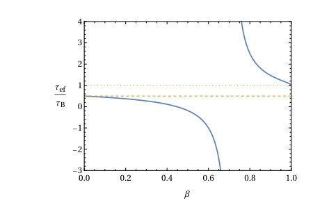
<figcaption class="paper-figure-caption"><b>Fig 2.</b> FIG. 2. Anomalous effective proper times. The effective proper time τef from Eq. (7), normalized by τB, is shown as a function of β, for τA = τB/2 and α = p</figcaption>
</figure>
<figure class="paper-figure-card">
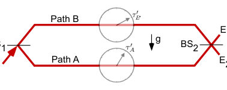
<figcaption class="paper-figure-caption"><b>Fig 3.</b> FIG. 3. Proposed scheme to verify an anomalous proper time. A quantum particle with a internal degree of freedom work- ing as a clock propagates in a Mach-Zehnder interferometer under Earth’s gravitational field g. BS1 and BS2 are beam splitters. Since the proper time for the particle internal de- gree of freedom runs faster for a higher gravitational poten- tial, the clock pointer will be entangled with the particle path, in the superposition state depicted in the figure. Depending on the particular exit the particle leaves the interferometer, the elapsed proper time for the clock may be outside what is permitted by general relativity, what could be experimentally verified.</figcaption>
</figure>
</div>

<p><strong>Summary.</strong> This paper explores what happens if proper time itself is subject to quantum superposition. By analyzing an interferometer setup, the authors predict that the measured effective proper time can take anomalous values, even becoming negative. This offers a novel, potentially observable test for quantum gravity effects using high-precision atomic interferometry.</p>
<p><strong>Why it may be interesting.</strong> This work directly bridges quantum mechanics and general relativity by proposing an observable signature—an anomalous proper time—that would confirm quantum gravitational effects beyond standard Newtonian approximations.</p>
<details>
<summary>Detailed structure</summary>
<p><strong>Main problem.</strong> The paper investigates the consequences of assuming that gravity and proper time obey the quantum superposition principle, leading to potentially anomalous time evolution.</p>
<p><strong>Main result.</strong> The effective elapsed proper time ($\tau_{ef}$) can assume values outside the classically allowed range, potentially becoming negative, suggesting a non-classical interaction between quantum mechanics and general relativity.</p>
<p><strong>Method.</strong> The analysis uses quantum mechanical formalism (Schrödinger equation) applied to a source particle in a superposition state to calculate the effective proper time experienced by a nearby probe system.</p>
<p><strong>Model / system.</strong> The primary model involves a source particle in a Mach-Zehnder interferometer setup interacting with a probe system whose proper time evolution is measured in Earth's gravitational field. The Hamiltonian is treated in the weak field limit.</p>
<p><strong>Key observables.</strong> The effective elapsed proper time ($\tau_{ef}$), and the resulting interference phase shift ($\theta_{ef}$).</p>
<p><strong>Important parameters / regimes.</strong> The relative difference in proper times ($\tau_B - \tau_A$) and the precision achievable by atomic clocks ($\sim 10^{-19}$).</p>
<p><strong>Assumptions / limitations.</strong> The analysis relies on the weak field approximation and assumes that decoherence can be managed to observe the predicted quantum interference effects.</p>
<p><strong>Figures summary.</strong> Figure 1 illustrates the interferometer scheme for observing $\tau_{ef}$. Figure 2 shows $\tau_{ef}$ deviating from classical bounds based on superposition coefficients. Figure 3 proposes an alternative scheme using atomic clocks in Earth's field.</p>
<p><strong>Paper structure.</strong> The paper develops the theoretical framework by analyzing the effective proper time ($\tau_{ef}$) derived from the superposition of paths, comparing different experimental schemes (source superposition vs. clock superposition), and concluding with the feasibility and implications of observing this anomalous time evolution.</p>
</details>
<details>
<summary>Abstract</summary>
<p>We investigate surprising consequences of the hypothesis that gravity and proper time obey the quantum superposition principle. We show that, for a massive body prepared in a superposition of two positions and post-selected in a suitable final state, the elapsed proper time in another region of space can assume an anomalous effective value lying outside the range allowed by classical general relativity. Remarkably, the effective elapsed proper time can even become negative, corresponding to an effective evolution backward in time. We also propose an experiment to observe an anomalous effective proper time associated with the internal degrees of freedom of a quantum particle in an interferometer under Earth's gravitational field. The proposed experiment is, in principle, feasible with current technology, and its realization could provide the first experimental evidence of an interplay between quantum mechanics and general relativity beyond the effects of the Newtonian potential in flat spacetime.</p>
</details>
<p><sub><a href="#top">↑ back to top</a></sub></p>

<p><a id="paper-2610.34299"></a></p>
<h3 id="virtual-defect-mediated-quantum-melting-in-supersolids"><a href="http://arxiv.org/abs/2610.34299v1">Virtual defect mediated quantum melting in supersolids</a></h3>
<p><strong>Authors:</strong> Lazaros Tsaloukidis, Matheus Grossklags, Luca Salasnich, Alejandro Mendoza-Coto<br>
<strong>Type:</strong> theory · <strong>Category:</strong> statistical mechanics · <strong>PDF:</strong> <a href="https://arxiv.org/pdf/2610.34299v1">https://arxiv.org/pdf/2610.34299v1</a><br>
<strong>Analysis basis:</strong> full PDF text, analyzed in chunks
<strong>Topic relevance:</strong> <code>analog quantum simulation</code> <strong>3/5</strong> · <code>Frenkel-Kontorova</code> <strong>2/5</strong> · <code>Keldysh / 2PI / non-Gaussian methods</code> <strong>1/5</strong></p>
<div class="figure-strip-hint">↔ Scroll figures horizontally</div>
<div class="paper-figures-scroll">
<figure class="paper-figure-card">
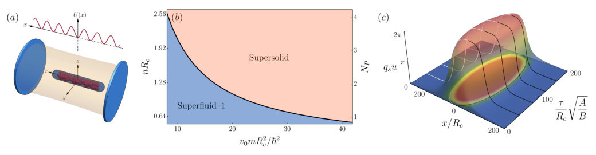
<figcaption class="paper-figure-caption"><b>Fig 1.</b> Figure 1. (a) Schematic experimental implementation of a soft-core bosonic gas on an optical lattice. The external potential stabilizes a long-range ordered supersolid phase. (b) Ground-state phase diagram for a system with effective pair potential Veff(x) = v0/  1+(x/Rc)6 on a commensurate substrate with amplitude U0mR2 c/ℏ2 = 0.01 and wave vector qRc = 3.93, similar to the roton instability wave vector (q0Rc ≈3.93411). Superfluid–1 phase corresponds to a modulated superfluid state with a single characteristic length scale and quasi-long-range positional order (c) Optimal soliton–antisoliton defect trajectory in dimensionless space-time coordinates for nRc = 1.3 and v0mR2 c/ℏ2 = 17. The...</figcaption>
</figure>
<figure class="paper-figure-card">
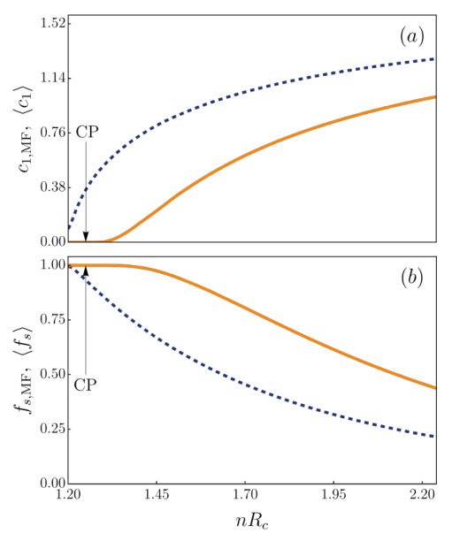
<figcaption class="paper-figure-caption"><b>Fig 2.</b> Figure 2. (a) Leading supersolid amplitude c1 calculated within the mean-field approximation (dashed blue curve) and corrected according to RG calculations (solid orange curve) as a function of dimensionless density nRc. (b) Superfluid frac- tion fs associated to the mean-field (dashed blue curve) and renormalized (solid orange curve) density profile as a function of dimensionless density nRc. For both figures, we consider v0mR2 c/ℏ2 = 17 and U0mR2 c/ℏ2 = 0.01, while the position of the critical point is signaled with CP.</figcaption>
</figure>
</div>

<p><strong>Summary.</strong> This work analyzes the quantum melting of supersolids, arguing that the transition is governed by virtual topological defects rather than mean-field structural changes. Using Renormalization Group theory on an effective quantum sine-Gordon model, the authors predict a Kosterlitz-Thouless transition. This provides a crucial, fluctuation-corrected understanding of how superfluidity breaks down in these exotic quantum materials.</p>
<p><strong>Why it may be interesting.</strong> It provides a rigorous, fluctuation-driven mechanism for a phase transition in a quantum many-body system, contrasting sharply with simpler mean-field predictions, which is highly relevant for understanding exotic quantum phases in cold atom setups.</p>
<details>
<summary>Detailed structure</summary>
<p><strong>Main problem.</strong> The paper investigates the quantum melting transition of supersolids, proposing that the transition is mediated by the proliferation of virtual topological defects rather than solely by mean-field structural energy minimization.</p>
<p><strong>Main result.</strong> The transition is predicted to be a Kosterlitz–Thouless (KT) transition driven by virtual soliton–antisoliton pairs, a mechanism fundamentally beyond the mean-field description.</p>
<p><strong>Method.</strong> The authors employ Renormalization Group (RG) techniques applied to an effective action derived from the system's Hamiltonian, leading to coupled flow equations for system parameters.</p>
<p><strong>Model / system.</strong> The system is a soft-core quasi-one-dimensional supersolid gas stabilized by a shallow external periodic lattice potential. The physics is modeled using an effective action that reduces to a quantum sine-Gordon model.</p>
<p><strong>Key observables.</strong> Superfluid fraction ($\langle f_s 
angle$), density modulation amplitudes ($\langle c_j 
angle$), and the correlation length ($\xi(	au)$) exhibiting KT critical behavior.</p>
<p><strong>Important parameters / regimes.</strong> The lattice potential strength ($U_0$), the density modulation wave vector ($q$), and the RG flow parameters ($a(l), \kappa_u(l)$).</p>
<p><strong>Assumptions / limitations.</strong> The analysis relies on deriving an effective action by integrating out fluctuation fields and performing a perturbative RG treatment, which is assumed to capture the essential KT physics.</p>
<p><strong>Figures summary.</strong> Figures illustrate phase diagrams showing the continuous virtual defect-mediated transition, and compare mean-field versus RG-corrected predictions for superfluid fraction and density modulation.</p>
<p><strong>Paper structure.</strong> The paper progresses from establishing the mean-field framework to deriving the effective action for positional fluctuations, and finally applying RG analysis to determine the critical exponents and the nature of the KT transition.</p>
</details>
<details>
<summary>Abstract</summary>
<p>The current understanding of supersolid melting is largely based on mean-field theories predicting that such transitions arise from a structural energy minimization mechanism. Here, we show that soft-core quasi-one-dimensional supersolids stabilized by a shallow external lattice can instead melt at zero temperature into a superfluid phase with quasi-long-range positional order through the proliferation of virtual soliton--antisoliton pairs, leading to a Kosterlitz--Thouless transition. We derive the corresponding Renormalization Group equations from first principles and use them to determine the critical properties of the system. Remarkably, the proliferation of topological defects near criticality strongly renormalizes both the density modulation and the superfluidity behavior. The transition described is intrinsically a beyond mean-field effect, since the external lattice produces only a smooth crossover between weakly and strongly modulated states at the mean-field level.</p>
</details>
<p><sub><a href="#top">↑ back to top</a></sub></p>

<p><a id="paper-2610.33709"></a></p>
<h3 id="deep-microscopic-photonic-bandstructure-of-a-two-dimensional-honeycomb-lattice"><a href="http://arxiv.org/abs/2610.33709v1">Deep-Microscopic Photonic Bandstructure of a Two-Dimensional Honeycomb Lattice</a></h3>
<p><strong>Authors:</strong> Pronoy Das, Sathwik Bharadwaj, Wenbo Sun, Zubin Jacob<br>
<strong>Type:</strong> theory · <strong>Category:</strong> other · <strong>PDF:</strong> <a href="https://arxiv.org/pdf/2610.33709v1">https://arxiv.org/pdf/2610.33709v1</a><br>
<strong>Analysis basis:</strong> full PDF text, analyzed in chunks
<strong>Topic relevance:</strong> <code>interference shaping light</code> <strong>3/5</strong> · <code>analog quantum simulation</code> <strong>2/5</strong></p>
<div class="figure-strip-hint">↔ Scroll figures horizontally</div>
<div class="paper-figures-scroll">
<figure class="paper-figure-card">
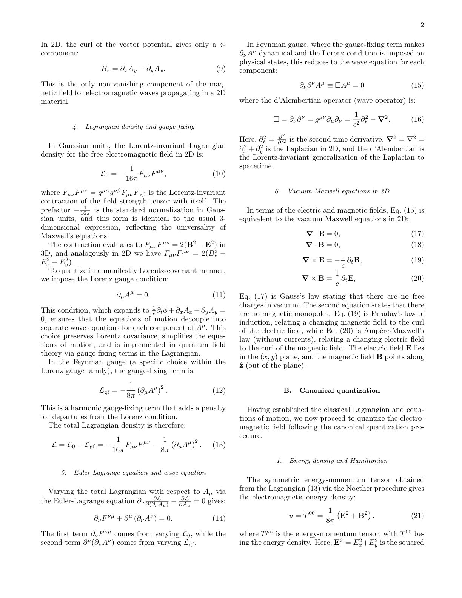
<figcaption class="paper-figure-caption"><b>Fig 1.</b> Low-resolution page preview, page 2</figcaption>
</figure>
<figure class="paper-figure-card">
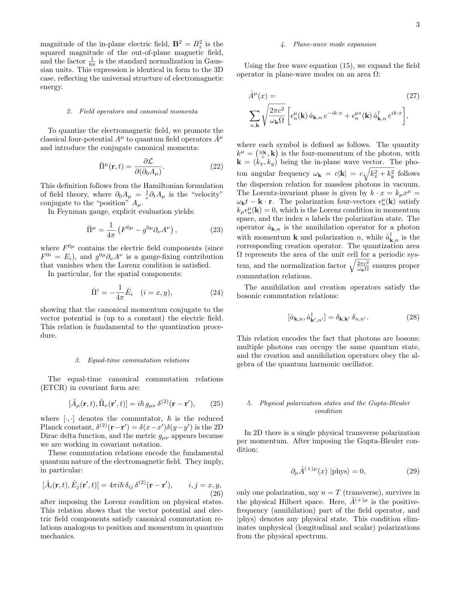
<figcaption class="paper-figure-caption"><b>Fig 2.</b> Low-resolution page preview, page 3</figcaption>
</figure>
<figure class="paper-figure-card">
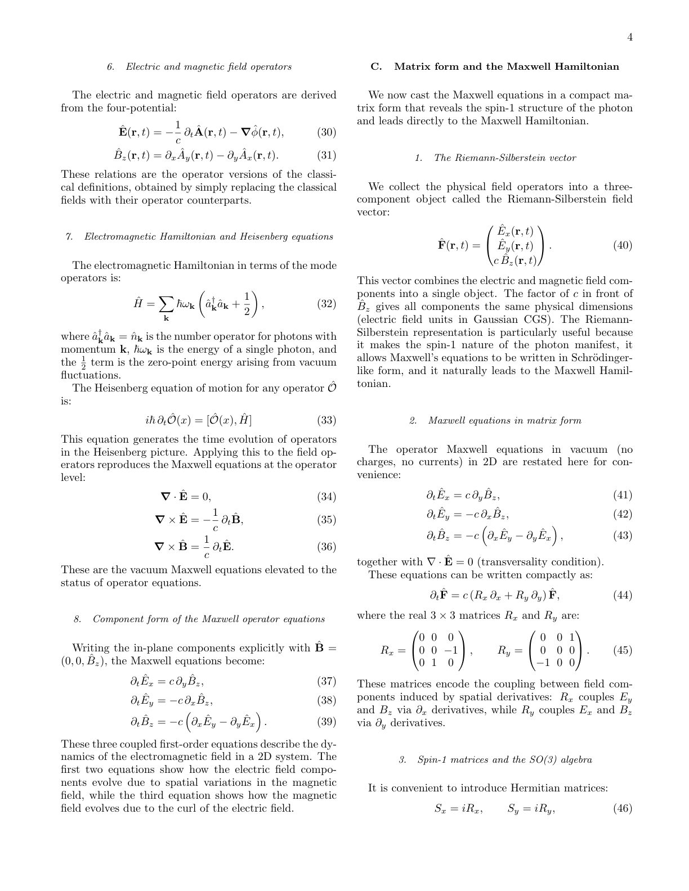
<figcaption class="paper-figure-caption"><b>Fig 3.</b> Low-resolution page preview, page 4</figcaption>
</figure>
<figure class="paper-figure-card">
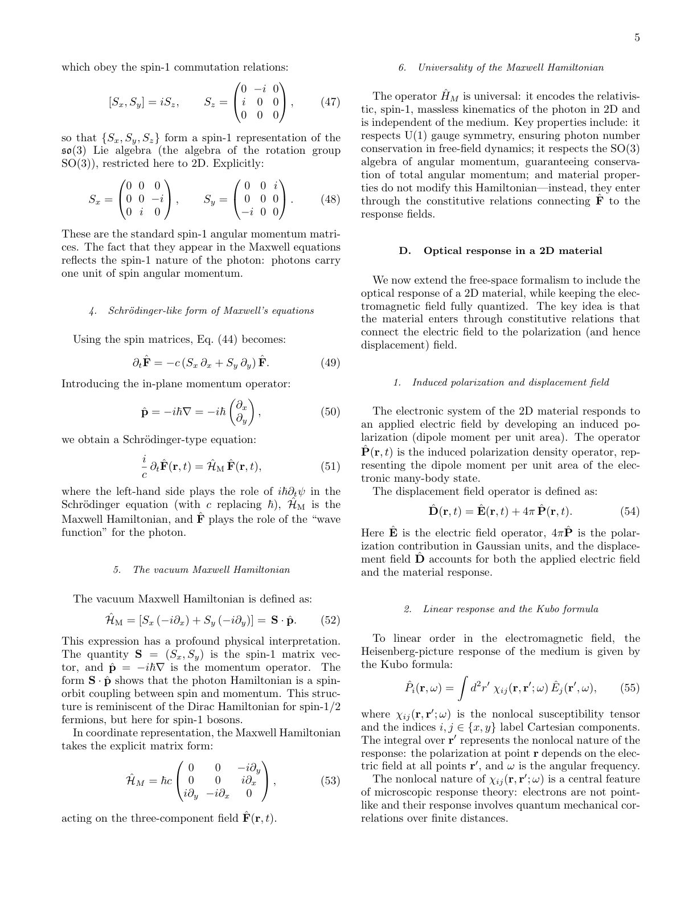
<figcaption class="paper-figure-caption"><b>Fig 4.</b> Low-resolution page preview, page 5</figcaption>
</figure>
<figure class="paper-figure-card">
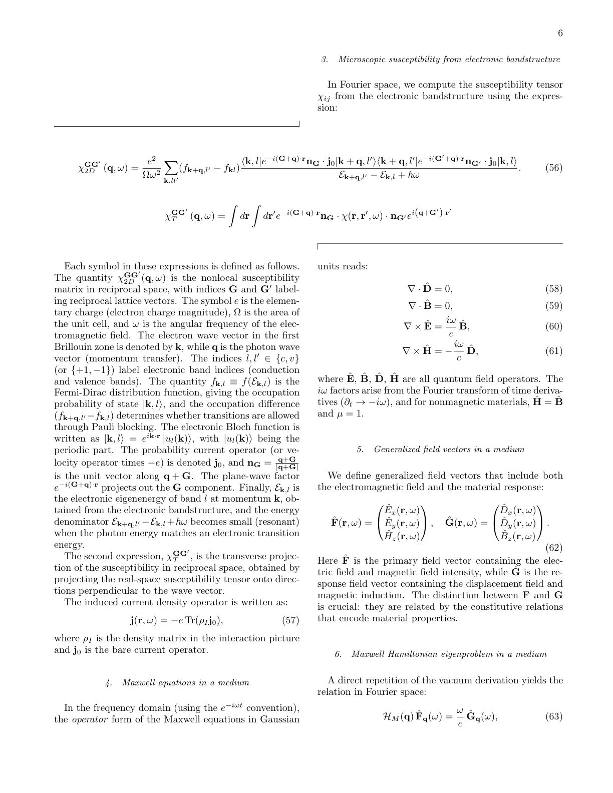
<figcaption class="paper-figure-caption"><b>Fig 5.</b> Low-resolution page preview, page 6</figcaption>
</figure>
</div>

<p><strong>Summary.</strong> This paper develops a deep-microscopic quantum theory for light propagation in 2D periodic materials, moving beyond classical approximations. By quantizing the Maxwell Hamiltonian, the authors derive the full photonic bandstructure for a honeycomb lattice. This framework unifies the study of light's quantum properties with those of electrons and phonons, enabling the study of topology and quantum fluctuations in photonic systems.</p>
<p><strong>Why it may be interesting.</strong> This work provides a unified quantum framework for light propagation in structured materials, treating photons on the same quantum mechanical level as matter excitations, which is highly relevant for quantum optics and topological photonics.</p>
<details>
<summary>Detailed structure</summary>
<p><strong>Main problem.</strong> The paper addresses the failure of macroscopic models to capture the full spatial dispersion of light in materials, necessitating a deep-microscopic, lattice-resolved description.</p>
<p><strong>Main result.</strong> They derive a deep-microscopic nonlocal theory for the photon, yielding a full spatial dispersion relation and real-space Bloch field textures for a 2D honeycomb lattice.</p>
<p><strong>Method.</strong> The approach involves formulating the problem using the Maxwell Hamiltonian, applying canonical quantization, and solving the resulting generalized eigenvalue problem for the photonic bandstructure.</p>
<p><strong>Model / system.</strong> The system is a two-dimensional (2D) honeycomb lattice, modeled using a tight-binding approach for the underlying electronic structure. The theory extends photon quantization to the same microscopic footing as electrons or phonons.</p>
<p><strong>Key observables.</strong> Photonic bandstructure ($\omega(\mathbf{q})$), real-space Bloch field textures, and the full spatial dispersion relation.</p>
<p><strong>Important parameters / regimes.</strong> Lattice parameters, hopping terms ($t, t_2$), Haldane gap parameters, and the frequency-dependent dielectric tensor elements.</p>
<p><strong>Assumptions / limitations.</strong> The theory relies on extending the Maxwell Hamiltonian to a quantum operator framework and utilizes techniques like the auxiliary variable method to solve the frequency-dependent eigenvalue problem.</p>
<p><strong>Figures summary.</strong> Not specified by the notes, but the process involves plotting the bandstructure $  ext{Re}[\omega(q)]$ vs. position along the high-symmetry path.</p>
<p><strong>Paper structure.</strong> The paper systematically moves from classical covariant electrodynamics to the Hamiltonian formulation, quantization, and finally to solving the generalized eigenvalue problem for the photonic bandstructure in the 2D lattice.</p>
</details>
<details>
<summary>Abstract</summary>
<p>Conventional descriptions of light in materials rely on macroscopic models that average the optical response over the microscopic lattice structures. These models are deployed in the semi-classical limit, where the collective local response over many lattice sites is adequate. However, they fail to capture the full spatial dispersion, which requires a lattice-resolved description of light. We address this limitation by formulating a deep-microscopic nonlocal theory of the photon based on the Maxwell Hamiltonian and its characteristic equation. The solution reveals the full spatial dispersion in the form of deep-microscopic photonic bandstructure, and corresponding real-space Bloch field textures. We demonstrate our theory for a two-dimensional (2D) tight-binding model of a gapped honeycomb lattice. Our framework thus extends photons to the same microscopic footing as electrons or phonons, providing a unified route to studying topology, dissipation, and quantum fluctuations of light in dispersive materials.</p>
</details>
<p><sub><a href="#top">↑ back to top</a></sub></p>

<p><a id="paper-2610.34486"></a></p>
<h3 id="qqlink-a-declarative-framework-for-multi-qpu-quantum-workflow-orchestration"><a href="http://arxiv.org/abs/2610.34486v1">QQLink: A Declarative Framework for Multi-QPU Quantum Workflow Orchestration</a></h3>
<p><strong>Authors:</strong> Vicente Leyton Ortega, Narasinga Rao Miniskar, Thomas Naughton, Travis S. Humble<br>
<strong>Type:</strong> both · <strong>Category:</strong> quantum information and computing · <strong>PDF:</strong> <a href="https://arxiv.org/pdf/2610.34486v1">https://arxiv.org/pdf/2610.34486v1</a><br>
<strong>Analysis basis:</strong> full PDF text, analyzed in chunks
<strong>Topic relevance:</strong> <code>quantum measurements</code> <strong>3/5</strong> · <code>QC/QI experiment</code> <strong>2/5</strong></p>
<div class="figure-strip-hint">↔ Scroll figures horizontally</div>
<div class="paper-figures-scroll">
<figure class="paper-figure-card">
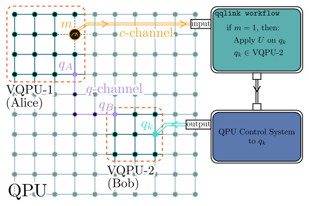
<figcaption class="paper-figure-caption"><b>Fig 1.</b> Fig. 1. Same-chip execution of a cross-node conditional. One QPU (qubit lattice) hosts two virtual QPUs, VQPU-1 (Alice) and VQPU-2 (Bob), as disjoint sectors (dashed). Two kinds of link cross the sector boundary. The q-channel (purple) is the quantum path between 𝑞𝐴and 𝑞𝐵that realizes a Bell pair or a cross-virtual CNOT; on a partitioned chip it is a native two-qubit gate routed through intermediate qubits, which is the co-located path of the channel-selection policy. Dark qubits are allocated; the three between 𝑞𝐴and 𝑞𝐵are claimed by routing and belong to neither sector. The c-channel (orange) is classical feedforward, in which the outcome 𝑚of a measurement on Alice’s sector conditions a...</figcaption>
</figure>
<figure class="paper-figure-card">
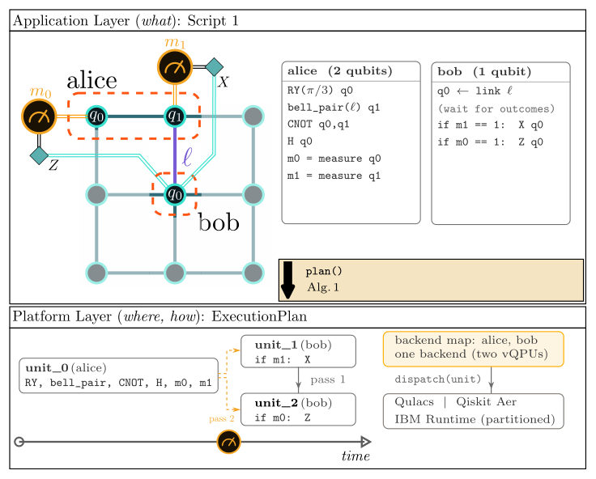
<figcaption class="paper-figure-caption"><b>Fig 2.</b> Fig. 2. The two-layer model on the running example (Script 1). Orange carries classical information, cyan carries quantum information, and purple marks an entanglement link. The top panel shows the application layer with the two WorkflowCircuits, Alice (𝑞0, 𝑞1) and Bob (𝑞0), drawn on the qubits they will occupy (grey qubits are unallocated) and listed as the backend-free instruction streams the developer wrote. The EntanglementLink ℓties Alice’s 𝑞1 to Bob’s 𝑞0. Alice’s measurements return MeasureRef handles 𝑚0, 𝑚1 (meters); Bob’s two if_then conditionals reference them across the circuit boundary and are drawn as the 𝑋and 𝑍corrections applied to Bob’s 𝑞0, the c-channel of Fig. 1. No backend...</figcaption>
</figure>
<figure class="paper-figure-card">
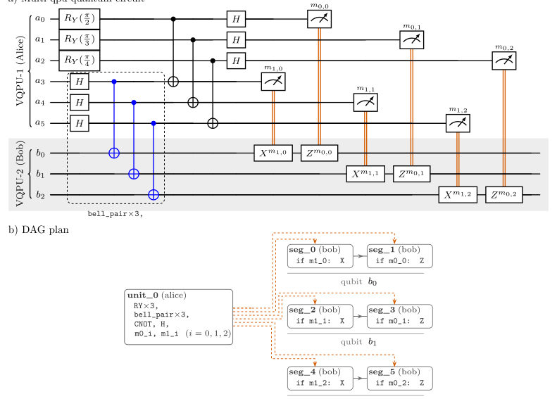
<figcaption class="paper-figure-caption"><b>Fig 3.</b> Fig. 3. Three-qubit register teleportation (Script 2) as authored and as planned. (a) The multi-QPU circuit on the nine allocated qubits, with Alice’s data qubits 𝑎0–𝑎2 and Bell halves 𝑎3–𝑎5 (VQPU-1), Bob’s 𝑏0–𝑏2 (VQPU-2). The three Bell pairs (blue CNOTs) are the only gates that cross the sector boundary; each of Alice’s measurement outcomes drives one correction on Bob through a classical wire (orange). The corrections are drawn in the order the planner emits them. (b) The execution plan as a DAG produced by Algorithm 1. Alice’s single unit produces six labeled outcomes; each of Bob’s six units depends on it through a cross-circuit edge (orange, dashed) from pass 2. The footprint analysis...</figcaption>
</figure>
<figure class="paper-figure-card">
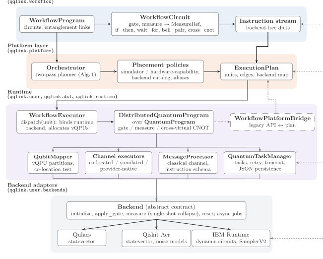
<figcaption class="paper-figure-caption"><b>Fig 4.</b> Fig. 4. Software architecture of QQLink. Bands are Python packages. The application layer records backend- free instruction streams; the platform layer plans them into an ExecutionPlan; the WorkflowExecutor binds each unit to a runtime backend and drives the pre-existing message-driven runtime and its four subsystems; all execution reaches hardware or simulators through one Backend contract. Black arrows are the path a program takes from authoring to execution; grey arrows are delegation inside the runtime (the four subsystems join one bus into the Backend contract). Dashed arrows mark the compatibility bridge between the legacy API and the workflow path; dashed leaders on the right mark...</figcaption>
</figure>
<figure class="paper-figure-card">
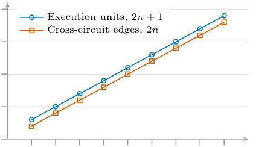
<figcaption class="paper-figure-caption"><b>Fig 5.</b> Fig. 5. Planning resources for 𝑛-qubit teleportation. Execution units grow as 2𝑛+1 and cross-circuit edges as 2𝑛; both are exact over the sweep, so plan size is linear in the number of teleported qubits, while the critical path is three units throughout.</figcaption>
</figure>
</div>

<p><strong>Summary.</strong> This paper introduces QQLink, a declarative framework designed to orchestrate complex quantum workflows spanning multiple Quantum Processing Units (QPUs). It solves the challenge of coordinating operations dependent on measurement results across different nodes by building a dependency graph. The framework is validated through rigorous simulation and hardware testing, establishing a robust abstraction for future distributed quantum computing architectures.</p>
<p><strong>Why it may be interesting.</strong> It provides a high-level, declarative programming model for quantum computation that explicitly handles the non-trivial classical feedforward required in distributed quantum algorithms, which is crucial for scaling beyond single-chip devices.</p>
<details>
<summary>Detailed structure</summary>
<p><strong>Main problem.</strong> The paper addresses the challenge of programming and orchestrating complex quantum protocols that require conditional operations based on measurement outcomes across multiple, distributed Quantum Processing Units (QPUs).</p>
<p><strong>Main result.</strong> QQLink provides a declarative, backend-agnostic framework that successfully models and plans these multi-QPU workflows, demonstrating correctness on simulators and matching gate counts on partitioned hardware.</p>
<p><strong>Method.</strong> The authors developed QQLink, a programming layer using workflow nodes and deferred measurement references to automatically derive a provably acyclic dependency graph for cross-node coordination.</p>
<p><strong>Model / system.</strong> The system involves distributed quantum computation across multiple QPUs, which can be simulated or mapped onto partitioned hardware like IBM Heron processors. The framework abstracts the workflow logic from the physical execution substrate.</p>
<p><strong>Key observables.</strong> Output-state infidelities (at most $5	imes10^{-12}$ on simulation), successful execution of complex protocols (e.g., Grover, Toffoli), and matching gate/conditional-block counts against hand-written circuits.</p>
<p><strong>Important parameters / regimes.</strong> The planning time scales linearly with the total size of the instructions' qubit footprints; hardware noise and coherence limits are noted as key physical constraints.</p>
<p><strong>Assumptions / limitations.</strong> The framework assumes the program is written deterministically in one thread, and while it models distributed protocols, the hardware demonstrations are limited to same-chip, virtual-QPU execution.</p>
<p><strong>Figures summary.</strong> Figures illustrate the physical paths for cross-node conditional operations, showing both quantum (q-channel) and classical (c-channel) communication paths between virtual QPUs.</p>
<p><strong>Paper structure.</strong> The paper introduces the need for workflow semantics in multi-QPU quantum computing, presents the QQLink framework with its core abstractions (MeasureRef, wait_for), details the planning and execution mechanisms, and validates the framework through simulation and hardware testing across various complex quantum algorithms.</p>
</details>
<details>
<summary>Abstract</summary>
<p>Distributed quantum protocols require measurement outcomes produced at one node to control operations at another. We present QQLink, a programming and orchestration layer that expresses these dependencies in a single program, using workflow nodes, deferred measurement references, and declared entanglement, and derives the cross-node coordination automatically. Its planner constructs a provably acyclic dependency graph in time linear in the total size of the instructions' qubit footprints. The same programs execute through simulator backends or are lowered to dynamic circuits on partitioned quantum hardware. We evaluate seven protocol workflows. Exhaustive feedforward-branch tests on the simulator runtime path, over tomographically complete input sets, yield output-state infidelities of at most $5\times10^{-12}$ and no incorrect classical outputs, and replaying every plan in random topological orders leaves each final state unchanged. Separate executor processes run the plans with delayed messages, with the joint quantum state held by a centralized simulation service. Every run with the full plan is correct, and removing required cross-node dependencies causes protocol failures. The lowered circuits match hand-written implementations of the same construction in two-qubit gate and conditional-block counts. Runs on two IBM Heron processors, each partitioned into virtual QPUs, demonstrate same-chip execution in two sessions a week apart. The runs also show large variation between sessions and losses beyond what calibration-derived noise models predict. Coherence-sensitive checks do not establish coherent Toffoli operation or preservation of the intended repetition-code superposition. These results support QQLink's workflow semantics on the tested execution paths and identify limits of the current hardware realization; execution across physically networked QPUs remains future work.</p>
</details>
<p><sub><a href="#top">↑ back to top</a></sub></p>

<p><a id="paper-2610.34439"></a></p>
<h3 id="theory-of-the-math390math-magnetization-plateau-of-the-spin-math391math-kagome-heisenberg-antiferromagnet"><a href="http://arxiv.org/abs/2610.34439v1">Theory of the $1/9$ Magnetization Plateau of the Spin-$1/2$ Kagome Heisenberg Antiferromagnet</a></h3>
<p><strong>Authors:</strong> Pratyay Ghosh, Frédéric Mila<br>
<strong>Type:</strong> theory · <strong>Category:</strong> strongly correlated electrons · <strong>PDF:</strong> <a href="https://arxiv.org/pdf/2610.34439v1">https://arxiv.org/pdf/2610.34439v1</a><br>
<strong>Analysis basis:</strong> full PDF text, analyzed in chunks
<strong>Topic relevance:</strong> <code>analog quantum simulation</code> <strong>3/5</strong> · <code>methods for driven-dissipative</code> <strong>2/5</strong></p>
<div class="figure-strip-hint">↔ Scroll figures horizontally</div>
<div class="paper-figures-scroll">
<figure class="paper-figure-card">
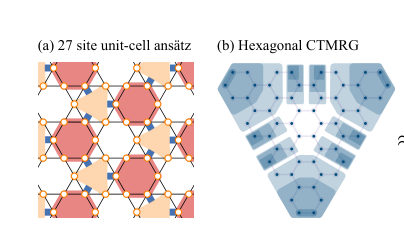
<figcaption class="paper-figure-caption"><b>Fig 1.</b> FIG. 1. The tensor network with a 27-site unit cell used in the iPEPS calculations. The network forms a honeycomb geome- try, with tensors connected by virtual bonds depicted by thick blue lines. The infinite environment surrounding the unit cells is addressed using the hexagonal CTMRG scheme [49–52]. (b) The schematic illustrates the construction of the hexago- nal CTMRG environment, which consists of three corner ten- sors C and six edge tensors T surrounding the central region. These tensors have auxiliary bonds of dimension χ.</figcaption>
</figure>
<figure class="paper-figure-card">

<figcaption class="paper-figure-caption"><b>Fig 2.</b> FIG. 2. (a) Magnetization, m/ms, as a function of h for D = 8, 9, 10. Within the 27-site ansatz, the magnetization increases continuously from h = 0, and the 1/9 plateau is stabilized for h ∈(0.2, 0.46). This is followed by a continuous increase toward the 1/3 plateau, with a weak feature observed near m/ms = 5/27. (b) Energy per site, e(m) = e(m, h)−hm, of the 1/9 plateau state as a function of bond dimension D. Solid lines represent large-D algebraic extrapolations, and conservative error bars denote the estimated uncertainty based on the largest-D energy and a linear extrapolation of the last three data points. Horizontal lines indicate previous RVB [31] and NQS [33] results. The D ≥12...</figcaption>
</figure>
<figure class="paper-figure-card">
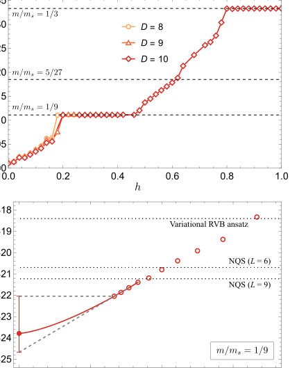
<figcaption class="paper-figure-caption"><b>Fig 3.</b> Figure 2(a) presents magnetization curves derived from the 27-site ansatz for various bond dimensions D as a function of h. The magnetization increases continuously from zero at zero field and attains the 1/9 plateau at h ≃0.2. This plateau persists up to h ≃0.46, after which the magnetization rises toward the 1/3 plateau, with a subtle feature near m/ms = 5/27. Figure 2(b) displays the energy e(m) = e(m, h) −hm of the m/ms = 1/9 state as a function of D. At D ≥12, the calculated energy is already lower than those obtained from both RVB wave-function ansatz [31] and NQS [33]. Extrap- olation to large D yields an even lower value [see also Tab. I]. In contrast, previously reported energies...</figcaption>
</figure>
<figure class="paper-figure-card">
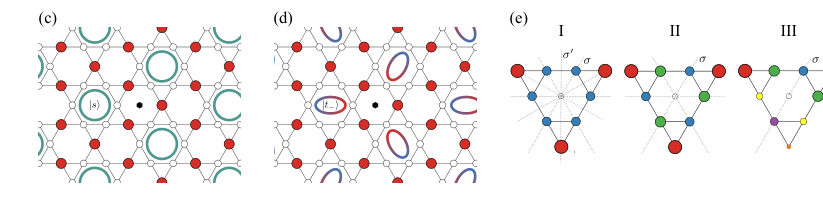
<figcaption class="paper-figure-caption"><b>Fig 4.</b> FIG. 3. Structure of the 1/9 plateau state as determined by (a) the 27-site unit-cell tensor network ansatz with bond dimension D = 15 at a magnetic field h = 0.4, and (b) the 9-site CMFT analysis. The size and color of each circle represent the local magnetization mz, while the thickness and color of each bond correspond to the spin correlation Cij. For panel (a), the relevant color scales are provided. In panel (b), blue and red indicate negative and positive values, respectively. The 27-site magnetic unit cells are delineated by dashed lines. Both states exhibit three inequivalent centers of threefold rotation, indicated by filled symbols. The complete pattern is generated by a 9-site...</figcaption>
</figure>
</div>

<p><strong>Summary.</strong> This work theoretically characterizes the 1/9 magnetization plateau in the Kagome Heisenberg Antiferromagnet, proposing a Spin-Density-Wave (SDW) state with a 27-site unit cell. Using iPEPS and CMFT, the authors demonstrate that this plateau breaks the system's sixfold rotational symmetry, a key distinction from other magnetization plateaus. The findings advance the understanding of quantum magnetism in highly frustrated lattices.</p>
<p><strong>Why it may be interesting.</strong> The detailed analysis of symmetry breaking in quantum magnetic materials using tensor networks provides a rigorous theoretical framework for understanding exotic quantum phases in frustrated lattice models.</p>
<details>
<summary>Detailed structure</summary>
<p><strong>Main problem.</strong> The paper investigates the microscopic nature and symmetry properties of the low-field 1/9 magnetization plateau in the spin-1/2 Kagome Heisenberg Antiferromagnet.</p>
<p><strong>Main result.</strong> The 1/9 plateau is identified as a Spin-Density-Wave (SDW) state characterized by a 27-site unit cell, which spontaneously breaks the system's sixfold rotational symmetry down to threefold symmetry.</p>
<p><strong>Method.</strong> The study employs advanced quantum many-body techniques, including Infinite Projected Entangled-Pair States (iPEPS) and Cluster Mean-Field Theory (CMFT), supplemented by Exact Diagonalization (ED) on finite clusters.</p>
<p><strong>Model / system.</strong> The system is the spin-1/2 Kagome Heisenberg Antiferromagnet, modeled by a Hamiltonian subjected to an external magnetic field (Zeeman term). The analysis focuses on the magnetization curve $m/m_s$ as a function of the field $h$.</p>
<p><strong>Key observables.</strong> Magnetization ($m/m_s$), variational energy per site $e(m)$, local magnetizations, and nearest-neighbor spin-spin correlations.</p>
<p><strong>Important parameters / regimes.</strong> The magnetic field $h$ (specifically in the range $h \in (0.2, 0.46)$ for the plateau), and the bond dimension $D$ used in the tensor network calculations.</p>
<p><strong>Assumptions / limitations.</strong> The primary approximations involve using the iPEPS ansatz with a simple update scheme and exploiting the approximate threefold rotational symmetry to reduce the unit cell size for computational feasibility.</p>
<p><strong>Figures summary.</strong> Figures illustrate the magnetization plateau region, the convergence of variational energy with bond dimension, and real-space patterns of local magnetizations and correlations confirming the SDW structure.</p>
<p><strong>Paper structure.</strong> The paper progresses by establishing the physical problem, applying iPEPS/CMFT to find the 27-site SDW structure, and then contrasting this symmetry breaking pattern with the higher-magnetization plateaus which retain higher symmetry.</p>
</details>
<details>
<summary>Abstract</summary>
<p>We investigate the $1/9$ magnetization plateau of the spin-$1/2$ kagome Heisenberg antiferromagnet using infinite projected entangled-pair states and identify a spin-density-wave state with a $27$-site unit cell and a lower variational energy than previous approaches. In contrast to higher-magnetization plateaus, which are well described by localized magnons on nonoverlapping hexagons and preserve a sixfold rotational symmetry, the $1/9$ plateau only keeps a threefold rotational symmmetry and consists of a tiling by three types of $9$-site clusters related by $\pm2π/3$ rotations. These conclusions are supported by a complementary cluster mean-field theory which correctly preserves the symmetry of the higher plateaus but leads to the same spontaneous symmetry breaking for the $1/9$ plateau with a qualitatively similar pattern of nine different local magnetizations.</p>
</details>
<p><sub><a href="#top">↑ back to top</a></sub></p>

<p><a id="paper-2610.33837"></a></p>
<h3 id="v-representability-beyond-singular-times-in-time-dependent-density-functional-theory-the-hubbard-dimer-case"><a href="http://arxiv.org/abs/2610.33837v1">V-Representability Beyond Singular Times in Time-Dependent Density Functional Theory: The Hubbard Dimer Case</a></h3>
<p><strong>Authors:</strong> Éric Cancès, Théo Duez<br>
<strong>Type:</strong> theory · <strong>Category:</strong> strongly correlated electrons · <strong>PDF:</strong> <a href="https://arxiv.org/pdf/2610.33837v1">https://arxiv.org/pdf/2610.33837v1</a><br>
<strong>Analysis basis:</strong> full PDF text, analyzed in chunks
<strong>Topic relevance:</strong> <code>analog quantum simulation</code> <strong>3/5</strong> · <code>Keldysh / 2PI / non-Gaussian methods</code> <strong>2/5</strong></p>
<div class="figure-strip-hint">↔ Scroll figures horizontally</div>
<div class="paper-figures-scroll">
<figure class="paper-figure-card">
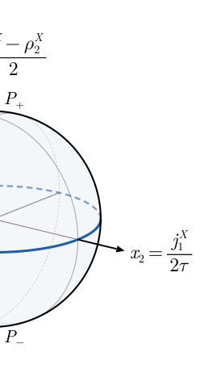
<figcaption class="paper-figure-caption"><b>Fig 1.</b> Figure 1: Bloch-sphere representation of the Slater states of the two-particle spin-singlet Hubbard model. The coordinates x1, x2, and x3 are respectively related to the kinetic energy, the current, and the density imbalance. The north and South Poles correspond to complete localization of the two electrons on sites 1 and 2, respectively, while the equator corresponds to states such that ρ1 = ρ2 = 1.</figcaption>
</figure>
<figure class="paper-figure-card">
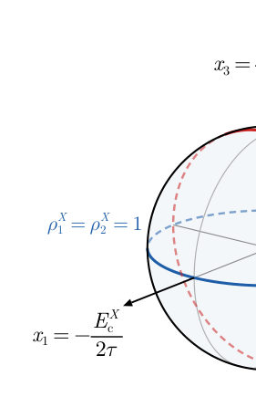
<figcaption class="paper-figure-caption"><b>Fig 2.</b> Figure 2: Bloch-sphere representation of the singular states: the red great circle Cs = {x1 = 0}, characterized by a vanishing kinetic energy, is the set of singular states for the VP dynamics. The two poles P±, which belong to Cs, are the singular states for the GP and GPc dynamics.</figcaption>
</figure>
<figure class="paper-figure-card">
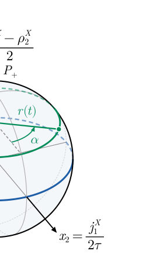
<figcaption class="paper-figure-caption"><b>Fig 3.</b> Figure 3: Geometric picture of the GPc reconstruction. The density constraint y3 = ρ1(t) −1 fixes the latitude of XGPc vc (t): the trajectory lies on the horizontal circle (green) of radius rρ(t) = p</figcaption>
</figure>
<figure class="paper-figure-card">
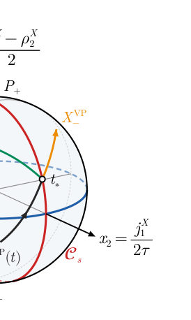
<figcaption class="paper-figure-caption"><b>Fig 4.</b> Figure 4: Branching of the VP-trajectories reproducing an interacting density. The trajectory XVP(t) reaches the great circle Cs (in red, the Bloch representation of Ks) at a singular time t∗∈Su. After t∗, the two continuations XVP ± , with x1 &gt; 0 and x1 &lt; 0, reproduce the same density.</figcaption>
</figure>
<figure class="paper-figure-card">

<figcaption class="paper-figure-caption"><b>Fig 5.</b> Figure 5: Branching of the GP-trajectories (vc = 0) reproducing an interacting density at a pole. The trajectory XGP(t) reaches the North Pole P+ at time tz, where the longitude is ill defined. At time tz + ϵ, 0 &lt; ϵ ≪1, any longitude defines a trajectory reproducing the same density on the time interval (tz, t′ z), where t′ z is the next singular time. For instance, the trajectories XGP,1, XGP,2 and XGP,3 correspond to three values of the free parameter aℓ+1 of Theorem 4.1.</figcaption>
</figure>
</div>

<p><strong>Summary.</strong> This paper rigorously examines the global V-representability of TDDFT for the Hubbard dimer model, a minimal model for correlated electrons. It proves that the non-interacting dynamics can be successfully continued across 'singular times' where standard theoretical tools fail. This advances the theoretical understanding of how TDDFT describes complex quantum dynamics in strongly correlated systems.</p>
<p><strong>Why it may be interesting.</strong> This work directly tackles the fundamental theoretical limitations of TDDFT, particularly concerning the continuation of dynamics across singularities, which is a major hurdle in simulating strongly correlated materials.</p>
<details>
<summary>Detailed structure</summary>
<p><strong>Main problem.</strong> The paper investigates the global V-representability problem in Time-Dependent Density Functional Theory (TDDFT) for the Hubbard dimer model, specifically focusing on dynamics beyond singular times.</p>
<p><strong>Main result.</strong> The authors prove global-in-time V-representability for both conventional and geometric formulations of TDDFT, showing that singular times do not obstruct the continuation of non-interacting dynamics.</p>
<p><strong>Method.</strong> The analysis involves comparing the time evolution derived from the interacting Hubbard Hamiltonian with the dynamics predicted by non-interacting Kohn-Sham equations, utilizing both variational and geometric formulations of TDDFT.</p>
<p><strong>Model / system.</strong> The system is the two-particle Hubbard dimer model in the spin-singlet sector. The dynamics are governed by a time-dependent Hamiltonian, and the analysis is restricted to the low-dimensional subspace representing the two-particle spin-singlet Slater states.</p>
<p><strong>Key observables.</strong> The time-dependent density ($
ho(t, \mathbf{x})$) and the effective potentials ($v$ or $w$) are key observables used to test representability.</p>
<p><strong>Important parameters / regimes.</strong> The hopping parameter ($    au$), on-site interaction parameters ($U_1, U_2$), and the external potential $u(t)$ are crucial parameters.</p>
<p><strong>Assumptions / limitations.</strong> The analysis builds upon the framework of TDDFT, addressing the breakdown of standard inversion formulas at singular times, and requires the non-interacting trajectories to belong to $W^{1,1}(0, T; \mathbb{C}^3)$.</p>
<p><strong>Paper structure.</strong> The paper proceeds by characterizing VP-representable densities, then analyzing non-interacting trajectories for the Variational Principle (VP), followed by a similar characterization for the Geometric Principle (GP), culminating in the main theorem proving global-in-time continuation.</p>
</details>
<details>
<summary>Abstract</summary>
<p>We study the global $V$-representability problem in time-dependent density functional theory (TDDFT) for the two-particle Hubbard dimer model in the spin-singlet sector. In particular, we investigate whether the time-dependent density of the interacting system obtained for a given one-body external potential $u$ (the tunable control variable) can be reproduced by a non-interacting Kohn--Sham system beyond the singular times at which the usual inversion formulas break down. We deal with both the conventional formulation of TDDFT based on some time-dependent variational principle and the recently introduced geometric formulation of TDDFT (Phys. Rev. Lett. 136 (2026) 256401, Phys. Rev. A 113 (2026) 062222). For both principles, we prove global-in-time $V$-representability, show that singular times induce non-uniqueness of the time-dependent effective potential, and classify the set of solutions.</p>
</details>
<p><sub><a href="#top">↑ back to top</a></sub></p>

<p><a id="paper-2610.33585"></a></p>
<h3 id="exact-magnetic-confinement-of-a-doped-hole-by-kinetic-frustration"><a href="http://arxiv.org/abs/2610.33585v1">Exact Magnetic Confinement of a Doped Hole by Kinetic Frustration</a></h3>
<p><strong>Authors:</strong> Nikolai Peshcherenko, Yixin Zhang, Cristian D. Batista, Yang Zhang<br>
<strong>Type:</strong> theory · <strong>Category:</strong> strongly correlated electrons · <strong>PDF:</strong> <a href="https://arxiv.org/pdf/2610.33585v1">https://arxiv.org/pdf/2610.33585v1</a><br>
<strong>Analysis basis:</strong> full PDF text, analyzed in chunks
<strong>Topic relevance:</strong> <code>analog quantum simulation</code> <strong>3/5</strong> · <code>Frenkel-Kontorova</code> <strong>1/5</strong></p>
<div class="figure-strip-hint">↔ Scroll figures horizontally</div>
<div class="paper-figures-scroll">
<figure class="paper-figure-card">

<figcaption class="paper-figure-caption"><b>Fig 1.</b> FIG. 1. (a) Sawtooth lattice with hopping amplitudes −t1 on solid bonds and −t2 on dashed bonds. (b) Unique dimer covering for a fixed hole position (open circle). Singlet dimers are enclosed by ovals, triplet dimers are indicated by parallel spins. In the resulting tight-binding model, the basal hopping is −t2 across a singlet and +t2 across a triplet dimer. The singlet region of length ℓs is indicated.</figcaption>
</figure>
<figure class="paper-figure-card">

<figcaption class="paper-figure-caption"><b>Fig 2.</b> FIG. 2. Construction of the exact ground state in each magne- tization sector. (a) Mapping onto the basal one-dimensional chain; singlet and triplet dimers generate the effective hop- pings ets and ett of Lemma 1 (red and yellow) [Eq. (3)]. (b) Connectivity step: the singlet bond (a, c) is moved to (e, c), with ted, tbc ∈{ett, ets}, preserving the number of singlets and strictly lowering the energy [Eq. (6)]. (c) Center-positioning step: an off-center singlet region is shifted toward the center by exchanging its two tails.</figcaption>
</figure>
<figure class="paper-figure-card">

<figcaption class="paper-figure-caption"><b>Fig 3.</b> FIG. 4. Field-controlled confinement length. (a) Singlet- region length ℓs(h) from minimizing Eℓ+ hℓ, for L = 100 and three couplings. Each plateau fixes the magnetization deficit L −M = ℓs over a finite field interval; the corre- sponding step |∆m| = |∆ℓs|/L in magnetization per triangle (m = M/L) vanishes as L →∞, while the cage length re- tains its discrete field dependence. (b) Same at t2/t1 = 0.1 for several L: the curves are L-independent except for the cutoff ℓs ≤L at h = O(L−3). Dashed: (2t1C/h)1/3 from minimizing E∞+ t1C/ℓ2 + hℓ, with C from Eq. (S60) of the SM.</figcaption>
</figure>
<figure class="paper-figure-card">

<figcaption class="paper-figure-caption"><b>Fig 4.</b> FIG. 3. (a) Ground-state wavefunction ψGS(x) on basal and apex sites for L = 100 (201 sites), a singlet region of ℓs = 30 bonds (dashed lines), and t2/t1 = 0.1. (b) log ψGS(x) on the basal sublattice; red lines are exponential fits to the tails. (c) Left tail (basal sites 0–35) on a signed log scale for t2/t1 = 0.1 and 0.6, i.e., below and above the crossover t30 ≃0.409 [Eq. (12)]; above t30 the decay is staggered. (d) Lloc versus t = t2/t1: exact diagonalization for ℓs = 30 compared with Eq. (9). The dashed line marks t = 1/ √</figcaption>
</figure>
<figure class="paper-figure-card">

<figcaption class="paper-figure-caption"><b>Fig 5.</b> Figure 3(d) compares Eq. (9) with the penetration depth extracted from exact diagonalization of Eq. (2) for L = 100 and a centered singlet region with ℓs = 30. The agreement is within 1.7 % over t2/t1 ∈[0.01, 1] (99 of 100 sampled couplings have at least 5 basal amplitudes above the numerical noise floor). Eq. (10) is exact only for t →0 and t →∞, where Lloc →(8t)−1/2 and Lloc → √</figcaption>
</figure>
</div>

<p><strong>Summary.</strong> This theoretical work details how magnetic frustration in a doped Hubbard model on a sawtooth lattice can induce the confinement of a hole into a stable, tunable quantum dot. The confinement mechanism relies on destructive interference across surrounding triplet dimers, allowing the cage size to be precisely controlled by an external magnetic field. This provides a fundamental understanding of how quantum correlations can engineer localized electronic states.</p>
<p><strong>Why it may be interesting.</strong> The concept of emergent confinement driven purely by kinetic frustration, rather than external disorder, provides a clean, tunable mechanism for creating quantum dots in strongly correlated lattice models.</p>
<details>
<summary>Detailed structure</summary>
<p><strong>Main problem.</strong> The paper establishes an exact mechanism for magnetic confinement of a doped hole driven purely by kinetic frustration, without relying on disorder or string tension.</p>
<p><strong>Main result.</strong> The magnetic field controls the size of the confined singlet region, leading to an emergent, tunable quantum dot structure in the ground state.</p>
<p><strong>Method.</strong> The problem is mapped onto a single-particle tight-binding chain via a dimer-covering mapping, allowing for energy minimization and variational analysis.</p>
<p><strong>Model / system.</strong> The system is modeled using the infinite-U Hubbard model on a sawtooth lattice, considering a single or two holes doped into the structure.</p>
<p><strong>Key observables.</strong> Singlet region length ($\ell_s$), ground state energy, and the hole wavefunction's decay profile.</p>
<p><strong>Important parameters / regimes.</strong> Magnetic field strength ($h$), hopping ratio ($t_2/t_1$), and system size ($L$).</p>
<p><strong>Assumptions / limitations.</strong> The analysis assumes the $U=\infty$ projection and relies on mapping the lattice problem to an effective 1D chain.</p>
<p><strong>Figures summary.</strong> Figures illustrate the lattice structure, the mapping to a 1D chain, the wavefunction decay, and how the singlet region size ($\ell_s$) is controlled by the magnetic field ($h$).</p>
<p><strong>Paper structure.</strong> The paper progresses by first establishing the one-hole confinement mechanism via energy minimization, then extending the analysis to two holes to compare shared versus separate cage configurations based on field strength.</p>
</details>
<details>
<summary>Abstract</summary>
<p>We establish an exact mechanism of magnetic confinement driven purely by kinetic frustration. In a finite open sawtooth $U=\infty$ Hubbard chain of $L$ unit cells doped with one hole, the ground state at magnetization $M$ contains $M$ polarized triplet dimers surrounding a connected singlet region of length $\ell_{\rm s}=L-M$. A magnetic field selects $M$ and hence the confinement length. The hole forms a standing wave in the singlet region with exponential tails in the triplet background. Confinement requires neither disorder nor an exchange-generated string tension: destructive interference between direct and apex-mediated hopping makes the triplet bonds reflecting. At $t_2/t_1=[2+4\cos(π/(\ell_{\rm s}+2))]^{-1/2}$, they become perfectly reflecting, producing a position-degenerate compact localized state. At every fixed field $0<h<h_{\rm sat}$, the singlet region remains finite as $L\to\infty$ and shrinks stepwise with increasing field, whereas at $h=0$ it spans the system.</p>
</details>
<p><sub><a href="#top">↑ back to top</a></sub></p>

<p><a id="paper-2610.34382"></a></p>
<h3 id="nodeless-d-wave-pairing-in-monolayer-fese-revealed-by-intra-unit-cell-josephson-interferometry"><a href="http://arxiv.org/abs/2610.34382v1">Nodeless d-wave pairing in monolayer FeSe revealed by intra-unit-cell Josephson interferometry</a></h3>
<p><strong>Authors:</strong> Runxin Li, Yuchen Huo, Jiong Mei, Ming-Qiang Ren, Miaomiao Wang, Quanxing Wei, Fengyu Yao, Maowen Zheng, Qing Qu, Cui Ding, Hongtao Yuan, Zhuoyu Chen, Wei-Qiang Chen, Kun Jiang, Qi-Kun Xue, Yu-Jie Sun<br>
<strong>Type:</strong> both · <strong>Category:</strong> strongly correlated electrons · <strong>PDF:</strong> <a href="https://arxiv.org/pdf/2610.34382v1">https://arxiv.org/pdf/2610.34382v1</a><br>
<strong>Analysis basis:</strong> full PDF text, analyzed in chunks
<strong>Topic relevance:</strong> <code>quantum measurements</code> <strong>3/5</strong> · <code>interference shaping light</code> <strong>1/5</strong></p>
<div class="figure-strip-hint">↔ Scroll figures horizontally</div>
<div class="paper-figures-scroll">
<figure class="paper-figure-card">

<figcaption class="paper-figure-caption"><b>Fig 1.</b> Fig. 1 | Josephson tunnelling in monolayer FeSe/STO. a, Schematic of the Josephson STM experiment, in which a superconducting Nb tip forms an atomically localized vacuum junction with monolayer FeSe grown on STO. b, Atomically resolved topography, T(r), showing a flat and homogeneous Se-terminated FeSe surface. Scale bar, 2 nm. (𝑉b = −30 mV , 𝐼t = 5 nA .) c, Differential-conductance spectra, dI/dV, acquired with the superconducting Nb tip at progressively increasing junction</figcaption>
</figure>
<figure class="paper-figure-card">

<figcaption class="paper-figure-caption"><b>Fig 2.</b> Fig. 2 | Intra-unit-cell structure of the Josephson response in monolayer FeSe. a– d, Simultaneously acquired topography, 𝑇(𝒓) (a), zero-bias Josephson conductance map, 𝑔0(𝒓) (b), conductance map at the negative-differential-conductance dip (0.4 meV), 𝑔𝑑𝑖𝑝(𝒓)(c), and finite-bias Andreev conductance map, 𝑔A(𝒓)(d), measured over</figcaption>
</figure>
<figure class="paper-figure-card">

<figcaption class="paper-figure-caption"><b>Fig 3.</b> Fig. 3 | Atomic-scale Josephson interference reveals the internal pairing structure of monolayer FeSe. a, Experimental Josephson 𝑔0(𝒓) map of monolayer FeSe. The overlaid Fe lattice defines the crystallographic registry in the 1-Fe unit-cell description. Scale bar, 1 Å. b, Nodeless d-wave pairing state used in the microscopic calculation. Left, momentum-space pairing form factor, 𝛥(𝒌) ~ cos 𝑘𝑥−cos 𝑘𝑦 , with colour</figcaption>
</figure>
<figure class="paper-figure-card">

<figcaption class="paper-figure-caption"><b>Fig 4.</b> Fig. 4 | Tip-position-controlled Josephson interference between opposite-sign pairing components. a, Schematic top view of the nearest-neighbour bond-centred</figcaption>
</figure>
</div>

<p><strong>Summary.</strong> The authors developed and applied intra-unit-cell Josephson interferometry to map the superconducting order parameter in monolayer FeSe. They found a characteristic nodal pattern in the local Josephson response, which theory confirms is the signature of nodeless d-wave pairing. This work establishes a powerful new tool for probing the microscopic phase structure of unconventional superconductors.</p>
<p><strong>Why it may be interesting.</strong> The technique provides a novel, real-space probe for superconducting phase structure, which is crucial for understanding unconventional pairing mechanisms beyond simple gap measurements.</p>
<details>
<summary>Detailed structure</summary>
<p><strong>Main problem.</strong> To develop a local, phase-sensitive probe capable of distinguishing unconventional superconducting pairing symmetries within a single unit cell.</p>
<p><strong>Main result.</strong> The local Josephson response exhibits a characteristic intra-unit-cell nodal pattern, which is identified as a fingerprint of nodeless d-wave pairing in monolayer FeSe.</p>
<p><strong>Method.</strong> Intra-unit-cell Josephson interferometry using a superconducting tip (Nb) on the FeSe/SrTiO3 interface, combined with theoretical modeling.</p>
<p><strong>Model / system.</strong> The system is monolayer FeSe on SrTiO3, modeled using a minimal single-orbital approach with a d-wave pair potential ($\Delta(\mathbf{k}) \propto \cos k_x - \cos k_y$).</p>
<p><strong>Key observables.</strong> Local Josephson conductance ($g_0(\mathbf{r})$) and Andreev conductance ($g_A(\mathbf{r})$) mapped across the unit cell.</p>
<p><strong>Important parameters / regimes.</strong> Temperature ($\sim 30 	ext{ mK}$), junction resistance ($R_N$), and the relative phase between microscopic pairing components.</p>
<p><strong>Assumptions / limitations.</strong> The observed pattern is attributed to destructive interference between Josephson tunneling amplitudes associated with opposite-sign pairing components, and the model neglects spin-orbit coupling.</p>
<p><strong>Figures summary.</strong> Figures show spatial maps of the Josephson response exhibiting nodal lines along Fe–Se directions and maxima at Fe–Fe bonds, matching theoretical calculations for d-wave pairing.</p>
<p><strong>Paper structure.</strong> The paper establishes the technique by showing the Josephson response, then uses theoretical calculations based on d-wave pairing to reproduce the observed nodal pattern, contrasting it with s-wave references.</p>
</details>
<details>
<summary>Abstract</summary>
<p>The Josephson effect provides a direct phase-sensitive probe of superconducting order and has played a central role in identifying unconventional pairing symmetries1-6. Conventional Josephson interferometry, however, extracts phase information through engineered junction geometries and crystallographic orientations, rather than by resolving the internal phase structure of the pair state within a single unit cell. Here, we use a superconducting Nb tip to realize atomic-scale Josephson interferometry in monolayer FeSe/SrTiO3. Despite a fully gapped quasiparticle spectrum, the local Josephson response exhibits a striking intra-unit-cell pattern, with maxima centred on Fe-Fe bonds and robust nodal lines along the Fe-Se directions. We show that these nodal lines arise from destructive interference between Josephson tunnelling amplitudes associated with opposite-sign pairing components. Microscopic calculations reproduce the observed spatial pattern and identify it as a fingerprint of nodeless d-wave pairing. Our results establish intra-unit-cell Josephson interferometry as a local phase-sensitive probe of pairing symmetry in unconventional superconductors.</p>
</details>
<p><sub><a href="#top">↑ back to top</a></sub></p>

<p><a id="paper-2610.33606"></a></p>
<h3 id="second-harmonic-bulk-response-of-fractional-quantum-hall-fluids"><a href="http://arxiv.org/abs/2610.33606v1">Second-Harmonic Bulk Response of Fractional Quantum Hall Fluids</a></h3>
<p><strong>Authors:</strong> J. Luke Pimlott, Pablo Reiser, T. Hans Hansson, Habib Rostami<br>
<strong>Type:</strong> theory · <strong>Category:</strong> strongly correlated electrons · <strong>PDF:</strong> <a href="https://arxiv.org/pdf/2610.33606v1">https://arxiv.org/pdf/2610.33606v1</a><br>
<strong>Analysis basis:</strong> full PDF text, analyzed in chunks
<strong>Topic relevance:</strong> <code>Keldysh / 2PI / non-Gaussian methods</code> <strong>3/5</strong> · <code>methods for driven-dissipative</code> <strong>1/5</strong></p>
<div class="figure-strip-hint">↔ Scroll figures horizontally</div>
<div class="paper-figures-scroll">
<figure class="paper-figure-card">

<figcaption class="paper-figure-caption"><b>Fig 1.</b> FIG. 1. Top: Hall-bar geometry in an out-of-plane mag- netic field B ∥ˆz, driven by an oscillating current Iωeiωt. The transverse voltage contains first- and second-harmonic com- ponents, V ωeiωt + V 2ωe2iωt. Bottom: Schematic low-energy Landau-level spectrum near the K′ (τ = −1) and K (τ = +1) valleys of an untilted massive Dirac model. Green dashed lines denote the Landau levels. The n ≥1 levels are valley degenerate, whereas the n = 0 Landau level is valley split and occurs at opposite band edges in the two valleys.</figcaption>
</figure>
<figure class="paper-figure-card">

<figcaption class="paper-figure-caption"><b>Fig 2.</b> FIG. 2. Nonlinear Hall resistivity ρ(2) T LL(2ω) of a fractional quantum Hall liquid in the tilted Dirac model, in units of h2αℓ/(ν2e3∆), with ℓ= ℏv/(8∆). The main panel shows the frequency dependence at θ = π/4. The inset shows the angular dependence at ω/ωc = 0.3, using the same resistivity units. Solid blue and dashed orange curves denote the real and imaginary parts, respectively. Throughout, ℏωc/∆= 0.1 and τ = −1.</figcaption>
</figure>
</div>

<p><strong>Summary.</strong> This theoretical work calculates the second-harmonic bulk response of fractional quantum Hall fluids using an effective Chern-Simons theory derived from a tilted Dirac model. The key finding is that the nonlinear Hall resistivity exhibits characteristic frequency and angular dependencies while demonstrating the cancellation of expected Kohn-mode resonances. This establishes finite-frequency nonlinear transport as a robust bulk probe for these correlated quantum states.</p>
<p><strong>Why it may be interesting.</strong> The rigorous derivation of nonlinear transport coefficients in a strongly correlated electron system like the FQH state, using bulk theory rather than edge physics, provides a powerful diagnostic tool for understanding topological phases.</p>
<details>
<summary>Detailed structure</summary>
<p><strong>Main problem.</strong> The paper develops a bulk theoretical description for the second-harmonic Hall response ($
ho^{(2)}_{T LL}$) in fractional quantum Hall fluids, aiming to bypass reliance on nonlinear edge-mode theories.</p>
<p><strong>Main result.</strong> The nonlinear Hall resistivity retains a characteristic $
u^{-2}$ scaling at finite frequency, exhibits strong anisotropy relative to the crystalline tilt axis, and crucially, the Kohn-mode resonances present in the second-order conductivity cancel out.</p>
<p><strong>Method.</strong> The analysis uses field-theoretical techniques, projecting a tilted massive Dirac model onto a low-energy band to construct a composite-boson Chern-Simons theory, followed by diagrammatic perturbation theory to calculate conductivity tensors.</p>
<p><strong>Model / system.</strong> The system is a fractional quantum Hall fluid modeled by an inversion-broken massive Dirac Hamiltonian incorporating a tilt parameter. The effective theory is formulated using a generalized GLCS action transformed into a composite-boson action.</p>
<p><strong>Key observables.</strong> Second-harmonic Hall resistivity ($
ho^{(2)}<em ab>{T LL}$), linear and nonlinear conductivity tensors ($\sigma</em>(\omega)$, $\sigma^{(2)}_{abc}(2\omega)$).</p>
<p><strong>Important parameters / regimes.</strong> Landau-level filling factor ($
u$), cyclotron frequency ($\omega_c$), gap energy ($\Delta$), and the tilt parameter ($\alpha$).</p>
<p><strong>Assumptions / limitations.</strong> The calculations are performed in the insulating regime ($\omega, \omega_c \ll \Delta/\hbar$) and rely on approximations such as the large-gap and weak-tilt limits.</p>
<p><strong>Figures summary.</strong> Figure 1 schematically illustrates the Hall-bar geometry driven by oscillating currents, showing the resulting first- and second-harmonic voltages. Other figures show the derived frequency and angular dependence of the nonlinear Hall resistivity.</p>
<p><strong>Paper structure.</strong> The paper progresses by establishing the effective low-energy Lagrangian, deriving the necessary conductivity tensors ($\sigma^{(2)}$) via perturbation theory, and finally calculating the nonlinear Hall resistivity $
ho^{(2)}_{T LL}$ in a closed form, analyzing its frequency and angular dependence.</p>
</details>
<details>
<summary>Abstract</summary>
<p>We develop a bulk description for the second-harmonic Hall response of fractional quantum Hall fluids with broken inversion and rotational symmetries, distinct from edge theories based on nonlinear edge-mode dispersion. By projecting a tilted massive Dirac model onto a single low-energy band, we construct a composite-boson Chern--Simons theory for the lowest Landau level that retains projection-induced nonlinear electromagnetic couplings. The nonlinear Hall resistivity vanishes in the dc limit, while its finite-frequency response retains the characteristic filling-factor dependence $ρ^{(2)}_{TLL}\proptoν^{-2}$, where $ν$ is the Landau-level filling factor. At low frequency, its real and imaginary parts scale as $(ω/ω_c)^2$ and $ω/ω_c$, respectively, where $ω_c$ is the cyclotron frequency, and the response is strongly anisotropic with respect to the crystalline tilt axis. Notably, the Kohn-mode resonances present in the second-order conductivity cancel in the nonlinear Hall resistivity. These results establish finite-frequency nonlinear transport as a bulk probe of fractional quantum Hall fluids without requiring nonlinear edge-mode dispersion.</p>
</details>
<p><sub><a href="#top">↑ back to top</a></sub></p>

<p><a id="paper-2610.34230"></a></p>
<h3 id="tuning-from-intrinsic-to-disorder-dominated-quantum-states-in-a-kagome-antiferromagnet"><a href="http://arxiv.org/abs/2610.34230v1">Tuning from intrinsic to disorder-dominated quantum states in a kagome antiferromagnet</a></h3>
<p><strong>Authors:</strong> Y. Tanaka, R. Kumakura, T. Yamaguchi, M. Kato, K. Totsuka, B. Li, Y. Zhao, Y. Li, R. Grasset, O. Cavani, A. Alessi, V. Sharma, Y. Kohama, S. Suetsugu<br>
<strong>Type:</strong> experiment · <strong>Category:</strong> strongly correlated electrons · <strong>PDF:</strong> <a href="https://arxiv.org/pdf/2610.34230v1">https://arxiv.org/pdf/2610.34230v1</a><br>
<strong>Analysis basis:</strong> full PDF text, analyzed in chunks
<strong>Topic relevance:</strong> <code>analog quantum simulation</code> <strong>3/5</strong> · <code>non-equilibrium universality</code> <strong>1/5</strong></p>
<div class="figure-strip-hint">↔ Scroll figures horizontally</div>
<div class="paper-figures-scroll">
<figure class="paper-figure-card">

<figcaption class="paper-figure-caption"><b>Fig 1.</b> FIG. 1. Crystal structure, electron irradiation, and magnetic susceptibility of YCOB. (a) Crystal structure of YCOB. X-ray diffraction measurements have suggested that random occu- pation of OH2 and Br2 sites displaces approximately 70% of Y3+ ions from their optimal positions on the kagome plane [30]. (b) Kagome plane formed by Cu2+ ions in YCOB. Ow- ing to the large difference in ionic radii between magnetic Cu2+ and nonmagnetic Y3+ ions, YCOB preserves an intact Cu2+ kagome lattice. (c) Schematic illustration of electron irradiation. High-energy electron beams create Frenkel pairs consisting of vacancies and interstitial atoms, which act as point defects. (d) Temperature dependence of...</figcaption>
</figure>
<figure class="paper-figure-card">

<figcaption class="paper-figure-caption"><b>Fig 2.</b> FIG. 2. Magnetic torque and disorder fragility of magneti- zation plateaus in YCOB. (a) Field dependence of the mag- netic torque divided by field τ/H at 1.5 K for the pristine (θ = 5.7◦), 1 C/cm2 (θ = 13.0◦), and 5 C/cm2 (θ = 10.1◦) samples. For comparison, the field dependence of the magne- tization M measured at 1.6 K for H||c is also shown [33]. For the pristine sample, the plateau-like anomalies around 20 and 50 T correspond to the 1/9 and 1/3 plateaus, as highlighted by light and dark gray regions, respectively. These anomalies are strongly suppressed in the irradiated samples, demonstrating that the magnetization-plateau states in YCOB are extremely sensitive to disorder. The inset...</figcaption>
</figure>
<figure class="paper-figure-card">

<figcaption class="paper-figure-caption"><b>Fig 3.</b> FIG. 3. Magnetic torque of irradiated YCOB at low fields. (a, b) Field dependence of the magnetic torque τ for 1 C/cm2 (a) and 5 C/cm2 (b) samples, respectively, measured at θ = 10.0◦</figcaption>
</figure>
<figure class="paper-figure-card">

<figcaption class="paper-figure-caption"><b>Fig 4.</b> FIG. 4. Specific heat of pristine and irradiated YCOB. (a) Temperature dependence of the specific heat divided by temperature C/T in zero field for the pristine, 1 C/cm2, and 5 C/cm2 samples. The peak observed in the pristine sample is initially suppressed by weak disorder in the 1 C/cm2 sample, whereas stronger disorder in the 5 C/cm2 sample gives rise to a dominant contribution arising from disorder. (b, c) Temperature dependence of C/T measured under several magnetic fields for the pristine (b) and 5 C/cm2 (c) samples. The peaks around 1 K in both samples are suppressed with increasing H. While the peak temperature Tpeak remains nearly constant in the pristine sample, Tpeak increases...</figcaption>
</figure>
<figure class="paper-figure-card">

<figcaption class="paper-figure-caption"><b>Fig 5.</b> FIG. 5. Scaling analysis of the magnetic specific heat and magnetization in pristine and irradiated YCOB. (a-c) Scaling plots of the magnetic specific heat, (µ0H)γCmag/T, as a function of T/H for the pristine (a), 1 C/cm2 (b), and 5 C/cm2 (c) samples. While the pristine sample shows no clear T/H collapse, the 5 C/cm2 sample exhibits a reasonable data collapse. The 1 C/cm2</figcaption>
</figure>
</div>

<p><strong>Summary.</strong> This work investigates the quantum magnetic behavior of a kagome antiferromagnet by systematically introducing controlled disorder via electron irradiation. By measuring magnetic torque and specific heat, the researchers show that the system's intrinsic quantum states are highly fragile to disorder, which acts as a tunable parameter driving the system into a disorder-dominated regime. This establishes the material as a key platform for studying disorder effects in quantum magnets.</p>
<p><strong>Why it may be interesting.</strong> The study provides a clean, tunable experimental realization of disorder effects on quantum ground states, which is highly relevant for understanding quantum phase transitions in strongly correlated materials.</p>
<details>
<summary>Detailed structure</summary>
<p><strong>Main problem.</strong> The study aims to understand how the quantum magnetic states of a kagome antiferromagnet evolve when tuned from their intrinsic quantum regime toward a disorder-dominated regime.</p>
<p><strong>Main result.</strong> The research demonstrates that the delicate magnetization plateaus are extremely fragile against minute amounts of disorder, and the emergence of disorder leads to characteristic scaling behaviors in the magnetic specific heat.</p>
<p><strong>Method.</strong> The authors used controlled point defects, introduced via electron irradiation, on single crystals of the kagome antiferromagnet YCu3(OH)6.5Br2.5 (YCOB).</p>
<p><strong>Model / system.</strong> The system is a spin-1/2 kagome Heisenberg antiferromagnet (AFM). The experimental platform involves measuring magnetic torque, specific heat, and magnetization on pristine versus irradiated samples.</p>
<p><strong>Key observables.</strong> Magnetization plateaus (1/9 and 1/3), magnetic torque sign reversal, and the characteristic scaling of the magnetic specific heat ($C/T$ vs $T/H$).</p>
<p><strong>Important parameters / regimes.</strong> Controlled disorder level, quantified by electron irradiation fluence ($\phi$), which acts as the tuning parameter.</p>
<p><strong>Assumptions / limitations.</strong> The defect density calculated from electron scattering cross sections represents an upper limit, as annealing during measurement could reduce the actual defect concentration.</p>
<p><strong>Figures summary.</strong> Figures show the suppression of magnetization plateaus and magnetic torque anomalies with increasing disorder, and the progressive emergence of characteristic scaling behavior in the specific heat as disorder increases.</p>
<p><strong>Paper structure.</strong> The paper systematically compares measurements (torque, specific heat, susceptibility) on pristine versus irradiated samples, using the degree of disorder as the primary tuning parameter to map the transition between intrinsic and disorder-dominated quantum states.</p>
</details>
<details>
<summary>Abstract</summary>
<p>The spin-1/2 kagome Heisenberg antiferromagnet (AFM) provides a paradigmatic platform for realizing quantum spin-liquid (QSL) and magnetization-plateau states. Experimental progress, however, has been hindered by structural disorder, whose effects on these quantum states remain elusive. A key experimental challenge is therefore to connect intrinsic and disorder-dominated regimes through controlled disorder and identify emergent degrees of freedom associated with disorder. Here we introduce controlled point defects through electron irradiation into the spin-1/2 kagome AFM YCu3(OH)6.5Br2.5 (YCOB) and track the resulting evolution of its low-energy magnetic states. High-field magnetic torque measurements reveal that the 1/9 and 1/3 magnetization plateaus are strongly suppressed by only ~0.05% irradiation-induced defects, demonstrating that these delicate quantum many-body states are extraordinarily fragile against dilute disorder. Moreover, the irradiation induces a sign reversal of the magnetic torque only at low temperatures and low fields, indicating the emergence of correlated defect-induced moments rather than isolated free spins. Remarkably, the characteristic scaling of the magnetic specific heat, absent in pristine YCOB, progressively emerges with increasing disorder. These findings establish dilute disorder as an effective tuning parameter that drives the kagome AFM from intrinsic quantum states toward a disorder-dominated regime. The contrasting responses further identify pristine YCOB as an exceptionally clean kagome AFM for accessing intrinsic quantum states.</p>
</details>
<p><sub><a href="#top">↑ back to top</a></sub></p>

<p><a id="paper-2610.34988"></a></p>
<h3 id="charge-coupled-device-based-arbitrary-waveform-generation-for-qubit-control"><a href="http://arxiv.org/abs/2610.34988v1">Charge-Coupled Device-Based Arbitrary Waveform Generation for Qubit Control</a></h3>
<p><strong>Authors:</strong> Shinichi Morisaka, Ryutaro Ohira<br>
<strong>Type:</strong> theory · <strong>Category:</strong> quantum information and computing · <strong>PDF:</strong> <a href="https://arxiv.org/pdf/2610.34988v1">https://arxiv.org/pdf/2610.34988v1</a><br>
<strong>Analysis basis:</strong> full PDF text, analyzed in chunks
<strong>Topic relevance:</strong> <code>QC/QI experiment</code> <strong>3/5</strong></p>
<div class="figure-strip-hint">↔ Scroll figures horizontally</div>
<div class="paper-figures-scroll">
<figure class="paper-figure-card">

<figcaption class="paper-figure-caption"><b>Fig 1.</b> Fig. 1. Proposed CCD-based architecture for qubit control.</figcaption>
</figure>
<figure class="paper-figure-card">

<figcaption class="paper-figure-caption"><b>Fig 2.</b> Fig. 2. (a) Detailed structure of the CCD waveform-generation unit. (b) Waveform loading phase. (c) Waveform output phase.</figcaption>
</figure>
</div>

<p><strong>Summary.</strong> This paper proposes using Charge-Coupled Devices (CCDs) to generate arbitrary microwave waveforms for qubit control. Instead of continuous microwave transmission, the method stores waveform data as charge, which is read out and upconverted. This approach significantly reduces the heat load and interconnect density required inside dilution refrigerators, enabling scalable quantum control systems.</p>
<p><strong>Why it may be interesting.</strong> This work directly addresses the physical implementation challenges of scaling quantum processors by proposing a novel, low-heat-load classical control interface, which is crucial for realizing large-scale quantum computation.</p>
<details>
<summary>Detailed structure</summary>
<p><strong>Main problem.</strong> Delivering accurately calibrated microwave waveforms to a large number of qubits in a cryogenic environment presents a major engineering challenge due to interconnect density and heat load.</p>
<p><strong>Main result.</strong> The proposed CCD-based architecture significantly reduces the required cryogenic heat load by storing waveform information as charge rather than continuously generating microwave signals.</p>
<p><strong>Method.</strong> The method involves storing digital waveform samples as charge packets in CCD channels, reading them out sequentially as baseband voltage, and then upconverting this signal to the required microwave frequency.</p>
<p><strong>Model / system.</strong> The system is a superconducting quantum processor requiring precise microwave control signals. The proposed solution utilizes Charge-Coupled Devices (CCDs) as a non-continuous, charge-storage medium for waveform generation.</p>
<p><strong>Key observables.</strong> Effective sampling rates (up to $MN$ sps), required power for transfer clocks ($P_{clk}$), and resulting cryogenic heat load ($\alpha P_{clk}$).</p>
<p><strong>Important parameters / regimes.</strong> Target capacitance ($C = 1 	ext{ pF}$), operating voltage ($V = 3.3 	ext{ V}$), and the heat load fraction ($\alpha$).</p>
<p><strong>Assumptions / limitations.</strong> The reference power calculation uses a commercial CCD, and the feasibility relies on achieving a low target capacitance ($C = 1 	ext{ pF}$) in a purpose-built CCD structure at cryogenic temperatures.</p>
<p><strong>Figures summary.</strong> Figure 1 illustrates the overall proposed CCD-based architecture for qubit control, while Figure 2 details the operational phases: waveform loading (writing charge) and waveform output (reading charge).</p>
<p><strong>Paper structure.</strong> The paper first identifies the engineering bottleneck (heat load from continuous signal generation). It then proposes the CCD store-and-readout paradigm. The core of the work involves calculating the power requirements, comparing a reference CCD estimate to an optimized, low-capacitance estimate, and concluding with the architectural advantage.</p>
</details>
<details>
<summary>Abstract</summary>
<p>We propose an arbitrary waveform generation architecture based on charge-coupled devices (CCDs) for qubit control. Waveform samples are stored as charge packets in CCD channels and sequentially clocked out as voltage samples. Multiple channels are operated in parallel and time-interleaved to achieve high effective sampling rates. The generated baseband waveforms are then upconverted to microwave frequencies to drive qubit operations. By representing waveform information as stored charge rather than as continuously generated or transmitted microwave signals, the proposed architecture provides a path to reducing cryogenic interconnect density and lowering heat load in scalable quantum control systems.</p>
</details>
<p><sub><a href="#top">↑ back to top</a></sub></p>

<p><a id="paper-2610.33429"></a></p>
<h3 id="exact-operator-bounds-on-leggett-garg-violations"><a href="http://arxiv.org/abs/2610.33429v1">Exact operator bounds on Leggett-Garg violations</a></h3>
<p><strong>Authors:</strong> Rathindra Nath Das, Arnab Kundu, Nemai Chandra Sarkar<br>
<strong>Type:</strong> theory · <strong>Category:</strong> quantum information and computing · <strong>PDF:</strong> <a href="https://arxiv.org/pdf/2610.33429v1">https://arxiv.org/pdf/2610.33429v1</a><br>
<strong>Analysis basis:</strong> full PDF text, analyzed in chunks
<strong>Topic relevance:</strong> <code>quantum measurements</code> <strong>3/5</strong></p>
<div class="figure-strip-hint">↔ Scroll figures horizontally</div>
<div class="paper-figures-scroll">
<figure class="paper-figure-card">

<figcaption class="paper-figure-caption"><b>Fig 1.</b> FIG. 1. Minimum negativity in the symmetric correlation plane. The colour map gives Nmin for C12 = C23 = x versus C13. The black V bounds the classical region in this plane; white dashed lines mark one eighth, one quarter and three eighths. The dashed parabola is the lower Lüders boundary, traced by the equally spaced precessing qubit. Its black dots mark the Lüders maximum of one eighth. The blue and or- ange curves show spin-one Lüders and resolved protocols with equal intervals. These curves and the higher-spin maxima are plotted at their average pair correlation x = (C12 + C23)/2. Their minimum negativity equals that of the symmetric pro- jection because K2 and K3 are not violated....</figcaption>
</figure>
<figure class="paper-figure-card">

<figcaption class="paper-figure-caption"><b>Fig 2.</b> FIG. 2. Different LG inequalities reveal the qubit negativity in different time ranges. (a) Equal intervals with precession angle θ = Ωτ. Shading shows the minimum negativity, re- vealed by K1 when the cosine is positive (blue) and by K4 when it is negative (orange). The dashed curve is the nega- tivity of HQ for the state (I+σy)/2 at the first time. It retains additional moments and never falls below the minimum. (b) Unequal intervals, with θ1 = Ω(t2 −t1) and θ2 = Ω(t3 −t2). Each of the eight regions is associated with one violated in- equality and peaks at one eighth. The dotted diagonal is the equal-interval line of panel (a). The formulas for both panels are given in Supplementary...</figcaption>
</figure>
</div>

<p><strong>Summary.</strong> This theoretical paper establishes an exact, universal bound connecting violations of Leggett-Garg inequalities to the negativity of a constructed spacetime density kernel. By analyzing how correlations measured at multiple times constrain the quantum state, the authors provide a powerful diagnostic tool to quantify non-classical temporal correlations in quantum systems.</p>
<p><strong>Why it may be interesting.</strong> This work provides rigorous, quantitative bounds on non-classical temporal correlations, which is crucial for understanding quantum memory, quantum process tomography, and the limits of local realism in time.</p>
<details>
<summary>Detailed structure</summary>
<p><strong>Main problem.</strong> The paper addresses the fundamental problem of testing Leggett-Garg (LG) inequalities, which determine if correlations measured at different times admit a positive joint probability distribution over histories.</p>
<p><strong>Main result.</strong> The authors establish an exact, universal bound relating LG violations to the least compatible kernel negativity, showing that this minimum negativity is zero if and only if all LG inequalities are satisfied.</p>
<p><strong>Method.</strong> The methodology involves extending density matrices to 'spacetime density kernels' and deriving bounds on the negativity of these kernels based on measured pair correlations and additional observables.</p>
<p><strong>Model / system.</strong> The study analyzes quantum systems undergoing measurements at multiple time points, using the framework of spacetime density kernels to describe temporal correlations.</p>
<p><strong>Key observables.</strong> Leggett-Garg (LG) violation, kernel negativity ($N$), pair correlations ($C_{ij}$), and the minimum compatible kernel negativity ($N_{\min}$).</p>
<p><strong>Important parameters / regimes.</strong> The number of measurement times ($n$), the specific observables measured (e.g., $\sigma_z$ vs. $\sigma_x$), and the initial state/dynamics.</p>
<p><strong>Assumptions / limitations.</strong> The analysis relies on constructing compatible kernels that reproduce measured correlations, and it distinguishes between the minimum negativity required by a set of averages and the negativity of the full kernel.</p>
<p><strong>Figures summary.</strong> Figures compare the minimum negativity ($N_{\min}$) revealed by different LG inequalities (e.g., $K_1, K_4, K_2, K_3$) for qubit measurements, contrasting results from Lüders protocols versus fully resolved measurements.</p>
<p><strong>Paper structure.</strong> The paper progresses by first defining the LG test using pair correlations, then deriving the universal bound using spacetime kernels, and finally extending the analysis to include additional, incompatible observables to find tighter bounds.</p>
</details>
<details>
<summary>Abstract</summary>
<p>Leggett-Garg (LG) inequalities test whether correlations measured at different times admit a positive joint probability distribution over histories. A violation requires negative values in any joint quasiprobability distribution reproducing those correlations, but such distributions can have negative values even without a violation. Spacetime density kernels extend the density-matrix description to multiple times and are used to study timelike entanglement. We establish a universal bound that relates LG violations to their negative eigenvalue weight. For LG tests involving any number of measurements, we determine the least compatible kernel negativity through an exact relation valid for any system dimension, initial state, dynamics, or measurement rule. This minimum is nonzero if and only if at least one LG inequality is violated. Three-time Lüders LG tests certify at most one eighth of negativity, whereas measurements resolving individual spin levels can approach one half. Including additional incompatible qubit observables gives a further exact minimum that can exceed the LG-only ceiling without increasing the LG violation.</p>
</details>
<p><sub><a href="#top">↑ back to top</a></sub></p>

<p><a id="paper-2610.34342"></a></p>
<h3 id="fermionic-superfluid-transition-and-pairing-scale-separation-in-the-kagome-flat-band"><a href="http://arxiv.org/abs/2610.34342v1">Fermionic superfluid transition and pairing scale separation in the kagome flat band</a></h3>
<p><strong>Authors:</strong> Xiang Li, Yu Wang<br>
<strong>Type:</strong> theory · <strong>Category:</strong> other · <strong>PDF:</strong> <a href="https://arxiv.org/pdf/2610.34342v1">https://arxiv.org/pdf/2610.34342v1</a><br>
<strong>Analysis basis:</strong> full PDF text, analyzed in chunks
<strong>Topic relevance:</strong> <code>analog quantum simulation</code> <strong>3/5</strong></p>
<div class="figure-strip-hint">↔ Scroll figures horizontally</div>
<div class="paper-figures-scroll">
<figure class="paper-figure-card">

<figcaption class="paper-figure-caption"><b>Fig 1.</b> FIG. 2. Dependence of the superfluid transition temperature Tc on the attractive interaction strength |U| at the flat-band filling ρ = 5/3 and the two van Hove fillings ρ = 5/6, 1/2. The solid green line denotes a linear fit given by Tc = 0.0314|U|, and the dashed lines serve as guides to the eye.</figcaption>
</figure>
<figure class="paper-figure-card">

<figcaption class="paper-figure-caption"><b>Fig 2.</b> FIG. 1. (a) Structure of the kagome lattice, consisting of a triangular Bravais lattice with three distinct sublattices A, B, and C. (b) The corresponding first Brillouin zone, with the high-symmetry points Γ, K, and M labeled. (c) Band structure along the high-symmetry path Γ-M-K-Γ (left panel) and the corresponding density of states (right panel). The van Hove singularities (VHS) occur at fillings ρ = 5/6, 1/2, while the Dirac points correspond to ρ = 2/3. Flat- band occupation spans the filling range 4/3 ⩽ρ ⩽2.</figcaption>
</figure>
<figure class="paper-figure-card">

<figcaption class="paper-figure-caption"><b>Fig 3.</b> FIG. 4. Density compressibility κ on an L = 18 kagome lattice. (a) Temperature dependence of κ at the flat-band filling ρ = 5/3 for various attractive interaction strengths |U| (solid lines) and at the van Hove fillings ρ = 5/6, 1/2 for |U| = 2.00 (dashed lines). (b) Interaction dependence of κ at the flat-band filling for various tem- peratures (solid lines) and at the two van Hove fillings for T = 0.30 (dashed lines). All lines serve as guides to the eye.</figcaption>
</figure>
<figure class="paper-figure-card">

<figcaption class="paper-figure-caption"><b>Fig 4.</b> FIG. 3. Temperature dependence of the spin susceptibility χ for var- ious attractive interaction strengths |U| on an L = 18 kagome lattice at the flat-band filling ρ = 5/3. Dashed lines serve as guides to the eye.</figcaption>
</figure>
<figure class="paper-figure-card">

<figcaption class="paper-figure-caption"><b>Fig 5.</b> FIG. 5. Phase diagram at the flat-band filling ρ = 5/3. The back- ground color map indicates the interpolated density compressibility κ. The boundary of the superfluid (SF) phase Tc is marked by black data points (solid line). The crossover TS between the normal Fermi gas (FG) and supercompressible bosonic fluid (SCBF) regions, ex- tracted from the maximum of the spin susceptibility χ, is indicated by white data points (dashed line).</figcaption>
</figure>
</div>

<p><strong>Summary.</strong> This work uses advanced Quantum Monte Carlo simulations to study superfluidity in the attractive Hubbard model on the kagome lattice, specifically focusing on the flat band. The key finding is the separation of the pairing temperature from the phase coherence temperature, leading to a stable intermediate bosonic fluid phase. This mechanism highlights the crucial role of flat-band physics in stabilizing exotic superconducting states.</p>
<p><strong>Why it may be interesting.</strong> The explicit connection between flat-band topology, enhanced pair fluctuations, and the separation of pairing/coherence scales provides a concrete theoretical framework applicable to both cold-atom and solid-state superconducting platforms.</p>
<details>
<summary>Detailed structure</summary>
<p><strong>Main problem.</strong> The study investigates the fermionic superfluid transition and the separation between the pairing scale and the global phase coherence scale in flat-band electronic systems.</p>
<p><strong>Main result.</strong> The research establishes a clear linear scaling for the superfluid transition temperature ($T_c \propto |U|$) and reveals a distinct intermediate Supercompressible Bosonic Fluid (SCBF) phase due to the separation of these two temperature scales.</p>
<p><strong>Method.</strong> The analysis employs large-scale determinant quantum Monte Carlo (DQMC) simulations, utilizing finite-size scaling on a dimensionless pairing correlation ratio ($R_{	ext{Pair}}$).</p>
<p><strong>Model / system.</strong> The system is modeled using the attractive Hubbard Hamiltonian on the kagome lattice. The flat band, populated at filling $
ho=5/3$, is the focus, contrasting with standard van Hove fillings.</p>
<p><strong>Key observables.</strong> Superfluid transition temperature ($T_c$), spin susceptibility ($\chi$), density compressibility ($\kappa$), and the pairing correlation ratio ($R_{	ext{Pair}}$).</p>
<p><strong>Important parameters / regimes.</strong> The analysis focuses on the attractive interaction strength $|U|$ and the flat-band filling $
ho=5/3$, comparing results to van Hove fillings.</p>
<p><strong>Assumptions / limitations.</strong> The study relies on DQMC simulations and finite-size scaling; mean-field approaches are noted to overestimate $T_c$ by neglecting fluctuations.</p>
<p><strong>Figures summary.</strong> Figures illustrate the kagome band structure, the linear scaling of $T_c$ with $|U|$ at $
ho=5/3$ compared to VHS fillings, and the temperature dependence of $\chi$ and $\kappa$ across different coupling regimes.</p>
<p><strong>Paper structure.</strong> The paper systematically analyzes the phase diagram by calculating $T_c$ using $R_{	ext{Pair}}$ crossing points, characterizing the intermediate SCBF phase via $\kappa$, and comparing the results against known fillings and mean-field predictions.</p>
</details>
<details>
<summary>Abstract</summary>
<p>Flat-band systems provide a promising platform for exploring exotic correlated phases owing to quenched kinetic energy and enhanced interaction effects. In this work, we investigate the flat-band superfluid transition in the attractive kagome Hubbard model using large-scale determinant quantum Monte Carlo simulations accelerated by fast Fourier transforms and delay updates. Through systematic calculations of the transition temperature, spin susceptibility, and density compressibility, we establish the finite-temperature phase diagram at the flat-band filling $ρ=5/3$ and find a clear linear scaling of the superfluid transition temperature with the interaction strength, $T_{\mathrm{c}}=0.0314|U|$. Our results reveal a wide separation of temperature scales between local pair formation and global phase coherence, which stabilizes a broad intermediate supercompressible bosonic fluid region of preformed pairs that bridges the normal Fermi gas and the flat-band superfluid. We further demonstrate that both the transition temperature and density compressibility are significantly enhanced in the flat band compared to van Hove fillings. Our findings highlight the essential role of flat-band-enhanced pair-density fluctuations in separating the pairing and phase-coherence scales, offering clear experimental signatures for probing flat-band superfluidity and superconductivity in cold-atom and kagome-material platforms.</p>
</details>
<p><sub><a href="#top">↑ back to top</a></sub></p>
<hr>
<p>
<a href="index.html">← Index</a>
 · <a href="papers_02.html">← Previous</a> · <a href="papers_04.html">Next →</a>
</p>
<hr>

</body>
</html>
